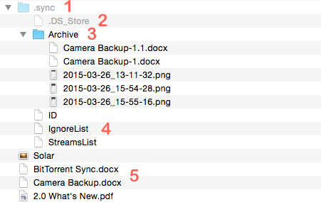

<!DOCTYPE html>
<html>
<head><meta name="generator" content="Hexo 3.9.0">
    <meta charset="utf-8">

    

    
    <title>树莓派折腾之：BTSYNC同步所有电脑和手机 | 无聊小博</title>
    
    <meta name="viewport" content="width=device-width, initial-scale=1, maximum-scale=1">
    
        <meta name="keywords" content="同步,树莓派,raspberry pi,btsync,resiliosync">
    
    <meta name="description" content="文章更新 20160526-初次成文 20160712-内容独立分拆，补充了脚本内容，文章添加部分内容 20160714-添加了一个检测BTSYNC挂载盘丢失重新挂载的脚本 20160722-修改了btsync控制脚本，并且将daemon user从btsync改为pi 20160724-修改了btsync控制脚本，以及btsync.confg配置文件 20160818-在海外的VPS上装了BTS">
<meta name="keywords" content="同步,树莓派,raspberry pi,btsync,resiliosync">
<meta property="og:type" content="article">
<meta property="og:title" content="树莓派折腾之：BTSYNC同步所有电脑和手机">
<meta property="og:url" content="http://www.wuliaole.com/post/use_btsync_to_sync_files_among_terminals_based_on_raspberry_pi/index.html">
<meta property="og:site_name" content="无聊小博">
<meta property="og:description" content="文章更新 20160526-初次成文 20160712-内容独立分拆，补充了脚本内容，文章添加部分内容 20160714-添加了一个检测BTSYNC挂载盘丢失重新挂载的脚本 20160722-修改了btsync控制脚本，并且将daemon user从btsync改为pi 20160724-修改了btsync控制脚本，以及btsync.confg配置文件 20160818-在海外的VPS上装了BTS">
<meta property="og:locale" content="zh-Hans">
<meta property="og:image" content="http://www.wuliaole.com/post/use_btsync_to_sync_files_among_terminals_based_on_raspberry_pi/sync_folder.png">
<meta property="og:updated_time" content="2018-10-11T15:31:02.000Z">
<meta name="twitter:card" content="summary">
<meta name="twitter:title" content="树莓派折腾之：BTSYNC同步所有电脑和手机">
<meta name="twitter:description" content="文章更新 20160526-初次成文 20160712-内容独立分拆，补充了脚本内容，文章添加部分内容 20160714-添加了一个检测BTSYNC挂载盘丢失重新挂载的脚本 20160722-修改了btsync控制脚本，并且将daemon user从btsync改为pi 20160724-修改了btsync控制脚本，以及btsync.confg配置文件 20160818-在海外的VPS上装了BTS">
<meta name="twitter:image" content="http://www.wuliaole.com/post/use_btsync_to_sync_files_among_terminals_based_on_raspberry_pi/sync_folder.png">
    

    
        <link rel="alternate" href="/" title="无聊小博" type="application/atom+xml">
    

    

    <link rel="stylesheet" href="/libs/font-awesome/css/font-awesome.min.css">
    <link rel="stylesheet" href="/libs/titillium-web/styles.css">
    <link rel="stylesheet" href="/libs/source-code-pro/styles.css">

    <link rel="stylesheet" href="/css/style.css">

    <script src="/libs/jquery/3.3.1/jquery.min.js"></script>
    
    
        <link rel="stylesheet" href="/libs/lightgallery/css/lightgallery.min.css">
    
    
        <link rel="stylesheet" href="/libs/justified-gallery/justifiedGallery.min.css">
    
    
        <script type="text/javascript">
(function(i,s,o,g,r,a,m) {i['GoogleAnalyticsObject']=r;i[r]=i[r]||function() {
(i[r].q=i[r].q||[]).push(arguments)},i[r].l=1*new Date();a=s.createElement(o),
m=s.getElementsByTagName(o)[0];a.async=1;a.src=g;m.parentNode.insertBefore(a,m)
})(window,document,'script','//www.google-analytics.com/analytics.js','ga');

ga('create', 'UA-144170558-1', 'auto');
ga('send', 'pageview');

</script>

    
    
        <script>
var _hmt = _hmt || [];
(function() {
  var hm = document.createElement("script");
  hm.src = "//hm.baidu.com/hm.js?0b9af06e21a88c60dc3deb5b699a3e63";
  var s = document.getElementsByTagName("script")[0];
  s.parentNode.insertBefore(hm, s);
})();
</script>

    


</head>
</html>
<body>
    <div id="wrap">
        <header id="header">
    <div id="header-outer" class="outer">
        <div class="container">
            <div class="container-inner">
                <div id="header-title">
                    <h1 class="logo-wrap">
                        <a href="/" class="logo"></a>
                    </h1>
                    
                        <h2 class="subtitle-wrap">
                            <p class="subtitle">Keep sharp</p>
                        </h2>
                    
                </div>
                <div id="header-inner" class="nav-container">
                    <a id="main-nav-toggle" class="nav-icon fa fa-bars"></a>
                    <div class="nav-container-inner">
                        <ul id="main-nav">
                            
                                <li class="main-nav-list-item" >
                                    <a class="main-nav-list-link" href="/">Home</a>
                                </li>
                            
                                        <ul class="main-nav-list"><li class="main-nav-list-item"><a class="main-nav-list-link" href="/categories/CentOS/">CentOS</a></li><li class="main-nav-list-item"><a class="main-nav-list-link" href="/categories/Hexo/">Hexo</a><ul class="main-nav-list-child"><li class="main-nav-list-item"><a class="main-nav-list-link" href="/categories/Hexo/基础/">基础</a></li></ul></li><li class="main-nav-list-item"><a class="main-nav-list-link" href="/categories/Linux/">Linux</a></li><li class="main-nav-list-item"><a class="main-nav-list-link" href="/categories/MacOS/">MacOS</a></li><li class="main-nav-list-item"><a class="main-nav-list-link" href="/categories/折腾/">折腾</a></li><li class="main-nav-list-item"><a class="main-nav-list-link" href="/categories/效率/">效率</a></li><li class="main-nav-list-item"><a class="main-nav-list-link" href="/categories/日常使用/">日常使用</a></li><li class="main-nav-list-item"><a class="main-nav-list-link" href="/categories/raspberry/">树莓派</a><ul class="main-nav-list-child"><li class="main-nav-list-item"><a class="main-nav-list-link" href="/categories/raspberry/入门/">入门</a></li></ul></li><li class="main-nav-list-item"><a class="main-nav-list-link" href="/categories/编程/">编程</a></li></ul>
                                    
                                <li class="main-nav-list-item" >
                                    <a class="main-nav-list-link" href="/about/index.html">About</a>
                                </li>
                            
                        </ul>
                        <nav id="sub-nav">
                            <div id="search-form-wrap">

    <form class="search-form">
        <input type="text" class="ins-search-input search-form-input" placeholder="Search" />
        <button type="submit" class="search-form-submit"></button>
    </form>
    <div class="ins-search">
    <div class="ins-search-mask"></div>
    <div class="ins-search-container">
        <div class="ins-input-wrapper">
            <input type="text" class="ins-search-input" placeholder="Type something..." />
            <span class="ins-close ins-selectable"><i class="fa fa-times-circle"></i></span>
        </div>
        <div class="ins-section-wrapper">
            <div class="ins-section-container"></div>
        </div>
    </div>
</div>
<script>
(function (window) {
    var INSIGHT_CONFIG = {
        TRANSLATION: {
            POSTS: 'Posts',
            PAGES: 'Pages',
            CATEGORIES: 'Categories',
            TAGS: 'Tags',
            UNTITLED: '(Untitled)',
        },
        ROOT_URL: '/',
        CONTENT_URL: '/content.json',
    };
    window.INSIGHT_CONFIG = INSIGHT_CONFIG;
})(window);
</script>
<script src="/js/insight.js"></script>

</div>
                        </nav>
                    </div>
                </div>
            </div>
        </div>
    </div>
</header>
        <div class="container">
            <div class="main-body container-inner">
                <div class="main-body-inner">
                    <section id="main">
                        <div class="main-body-header">
    <h1 class="header">
    
    <a class="page-title-link" href="/categories/raspberry/">树莓派</a>
    </h1>
</div>

                        <div class="main-body-content">
                            <article id="post-20160712-树莓派折腾之：BTSYNC同步所有电脑和手机" class="article article-single article-type-post" itemscope itemprop="blogPost">
    <div class="article-inner">
        
            <header class="article-header">
                
    
        <h1 class="article-title" itemprop="name">
        树莓派折腾之：BTSYNC同步所有电脑和手机
        </h1>
    

            </header>
        
        
            <div class="article-meta">
                
    <div class="article-date">
        <a href="/post/use_btsync_to_sync_files_among_terminals_based_on_raspberry_pi/" class="article-date">
            <time datetime="2016-07-12T03:19:10.000Z" itemprop="datePublished">2016-07-12</time>
        </a>
    </div>

		

                
    <div class="article-tag">
        <i class="fa fa-tag"></i>
        <a class="tag-link" href="/tags/btsync/">btsync</a>, <a class="tag-link" href="/tags/raspberry-pi/">raspberry pi</a>, <a class="tag-link" href="/tags/resiliosync/">resiliosync</a>, <a class="tag-link" href="/tags/同步/">同步</a>, <a class="tag-link" href="/tags/树莓派/">树莓派</a>
    </div>

            </div>
        
        
        <div class="article-entry" itemprop="articleBody">
            <h2 id="文章更新"><a href="#文章更新" class="headerlink" title="文章更新"></a>文章更新</h2><ol>
<li>20160526-初次成文</li>
<li>20160712-内容独立分拆，补充了脚本内容，文章添加部分内容</li>
<li>20160714-添加了一个检测BTSYNC挂载盘丢失重新挂载的脚本</li>
<li>20160722-修改了btsync控制脚本，并且将daemon user从btsync改为pi</li>
<li>20160724-修改了btsync控制脚本，以及btsync.confg配置文件</li>
<li>20160818-在海外的VPS上装了BTSYNC，只是因为有一个静态IP可以当做known_hosts来加强不同主机之间的联系</li>
<li>20160819-更改了外接盘挂掉检测脚本，remount方式更加可靠。</li>
<li>20160830-BTSync正式改名为Resilio Sync，文章内容基于2.4.0 RC2</li>
<li>20160901-更新了在CentOS 7上安装Resilio Sync，CentOS的防火墙设置</li>
<li>20160909-更新了Resilio Sync Archive 目录的运行机制，请注意阅读相关章节</li>
<li>20160913-更新了软件的使用注意事项</li>
</ol>
<h2 id="为什么会有这篇文章"><a href="#为什么会有这篇文章" class="headerlink" title="为什么会有这篇文章"></a>为什么会有这篇文章</h2><p>因为电脑越来越多，又想进一步提高效率，本文初衷就是这么简单，工作文件，生活照片，随手可得，这就是这篇文章的目标。至于为什么推荐BiTtorent Sync(现在已经改名了，叫Resilo Sync)，可能是因为最早接触吧。而且网上介绍的文章比较多，并且自己有一个树莓派24小时开机，不利用起来说不过去。至于类似的方案嘛，最近从小众软件听说了Syncthing，应该也是个不错的替代品，因为后者开源并且免费。但是我目前已经用了BTSYNC很久了，并且买了个人永远授权，对于我来说稳定熟悉的工具效率更高一些。<a id="more"></a></p>
<h2 id="在MAC和PC上安装Resilio-Sync"><a href="#在MAC和PC上安装Resilio-Sync" class="headerlink" title="在MAC和PC上安装Resilio Sync"></a>在MAC和PC上安装Resilio Sync</h2><p>因为都有相应的客户端，也没啥好设置的，打开用即可，所以就不多介绍了，重点介绍在CENTOS和树莓派两个平台上的安装。Resilio Sync软件的官方地址在<a href="https://www.getsync.com/platforms/desktop/" target="_blank" rel="noopener">这里</a>，可以看到BTSYNC几乎是各种平台全覆盖，不得不觉得很细心。2.4.0 rc2的内测地址在<a href="http://internal.getsync.com/2.4.0.662_SYHTTS/" target="_blank" rel="noopener">这里</a></p>
<h2 id="在树莓派上上安装Resilio-Sync"><a href="#在树莓派上上安装Resilio-Sync" class="headerlink" title="在树莓派上上安装Resilio Sync"></a>在树莓派上上安装Resilio Sync</h2><p><code>### 为BTSYNC创建独立账户</code></p>
<figure class="highlight bash"><table><tr><td class="gutter"><pre><span class="line">1</span><br></pre></td><td class="code"><pre><span class="line">sudo adduser --quiet --system --group --disabled-password btsync</span><br></pre></td></tr></table></figure>

<p>我后来没有使用Resilio Sync独立账户，而直接使用了pi账户，因为权限问题有点复杂。</p>
<h3 id="下载并安装"><a href="#下载并安装" class="headerlink" title="下载并安装"></a>下载并安装</h3><figure class="highlight bash"><table><tr><td class="gutter"><pre><span class="line">1</span><br><span class="line">2</span><br><span class="line">3</span><br><span class="line">4</span><br></pre></td><td class="code"><pre><span class="line"><span class="built_in">cd</span> /usr</span><br><span class="line">sudo wget http://internal.getsync.com/2.4.0.662_SYHTTS/resilio-sync_arm.tar.gz <span class="comment">#树莓派需要下载ARM版本</span></span><br><span class="line">sudo tar -zxvf resilio-sync_arm.tar.gz -C /usr/<span class="built_in">local</span>/sbin rslsync <span class="comment">#解压缩,btsync表示只需要压缩包中的 rslsync 一个文件</span></span><br><span class="line">/usr/<span class="built_in">local</span>/sbin/rslsync --webui.listen 0.0.0.0:8888 <span class="comment">#初次运行，监听8888端口提供GUI管理界面</span></span><br></pre></td></tr></table></figure>

<p>然后，在手机或者电脑上访问 <code>http://your_raspberry_ip:8888/gui</code> 即可看到GUI界面。</p>
<p>需要注意的是，这样执行，只按照默认配置执行的，如果需要定义自己的配置，请首先通过 <code>./rslsync --dump-sample-config</code> 来dump一份默认的配置文件，文件名是 <code>rslsync.conf</code></p>
<p>例如执行</p>
<figure class="highlight bash"><table><tr><td class="gutter"><pre><span class="line">1</span><br></pre></td><td class="code"><pre><span class="line">/usr/<span class="built_in">local</span>/sbin/rslsync --dump-sample-config &gt; /etc/rslsync.conf</span><br></pre></td></tr></table></figure>

<p>这个文件，需要修改的主要就是给你这台运行btsync的服务器起个名字，并且修改下密码以及监听端口，然后以后每次执行，就可以通过 <code>./rslsync --config rslsync.conf</code> 来执行你配置好的参数了。</p>
<h3 id="配置开机启动"><a href="#配置开机启动" class="headerlink" title="配置开机启动"></a>配置开机启动</h3><p>为了让Resilio Sync每次树莓派开机都启动，我参考这个<a href="http://www.lai18.com/content/1294646.html" target="_blank" rel="noopener">地方</a>，写了个脚本放在/etc/init.d下面</p>
<figure class="highlight bash"><table><tr><td class="gutter"><pre><span class="line">1</span><br></pre></td><td class="code"><pre><span class="line">sudo vim /etc/init.d/rslsync.sh</span><br></pre></td></tr></table></figure>

<p>脚本如下：</p>
<figure class="highlight bash"><table><tr><td class="gutter"><pre><span class="line">1</span><br><span class="line">2</span><br><span class="line">3</span><br><span class="line">4</span><br><span class="line">5</span><br><span class="line">6</span><br><span class="line">7</span><br><span class="line">8</span><br><span class="line">9</span><br><span class="line">10</span><br><span class="line">11</span><br><span class="line">12</span><br><span class="line">13</span><br><span class="line">14</span><br><span class="line">15</span><br><span class="line">16</span><br><span class="line">17</span><br><span class="line">18</span><br><span class="line">19</span><br><span class="line">20</span><br><span class="line">21</span><br><span class="line">22</span><br><span class="line">23</span><br><span class="line">24</span><br><span class="line">25</span><br><span class="line">26</span><br><span class="line">27</span><br><span class="line">28</span><br><span class="line">29</span><br><span class="line">30</span><br><span class="line">31</span><br><span class="line">32</span><br><span class="line">33</span><br><span class="line">34</span><br><span class="line">35</span><br><span class="line">36</span><br><span class="line">37</span><br><span class="line">38</span><br><span class="line">39</span><br><span class="line">40</span><br><span class="line">41</span><br><span class="line">42</span><br><span class="line">43</span><br><span class="line">44</span><br><span class="line">45</span><br><span class="line">46</span><br><span class="line">47</span><br><span class="line">48</span><br><span class="line">49</span><br><span class="line">50</span><br><span class="line">51</span><br><span class="line">52</span><br><span class="line">53</span><br><span class="line">54</span><br><span class="line">55</span><br><span class="line">56</span><br><span class="line">57</span><br><span class="line">58</span><br><span class="line">59</span><br><span class="line">60</span><br><span class="line">61</span><br><span class="line">62</span><br><span class="line">63</span><br><span class="line">64</span><br><span class="line">65</span><br><span class="line">66</span><br><span class="line">67</span><br><span class="line">68</span><br><span class="line">69</span><br><span class="line">70</span><br><span class="line">71</span><br><span class="line">72</span><br><span class="line">73</span><br><span class="line">74</span><br><span class="line">75</span><br><span class="line">76</span><br><span class="line">77</span><br><span class="line">78</span><br><span class="line">79</span><br><span class="line">80</span><br><span class="line">81</span><br><span class="line">82</span><br><span class="line">83</span><br><span class="line">84</span><br><span class="line">85</span><br><span class="line">86</span><br><span class="line">87</span><br><span class="line">88</span><br><span class="line">89</span><br><span class="line">90</span><br><span class="line">91</span><br><span class="line">92</span><br><span class="line">93</span><br><span class="line">94</span><br><span class="line">95</span><br><span class="line">96</span><br><span class="line">97</span><br><span class="line">98</span><br><span class="line">99</span><br><span class="line">100</span><br><span class="line">101</span><br><span class="line">102</span><br><span class="line">103</span><br><span class="line">104</span><br><span class="line">105</span><br><span class="line">106</span><br><span class="line">107</span><br><span class="line">108</span><br><span class="line">109</span><br><span class="line">110</span><br><span class="line">111</span><br><span class="line">112</span><br><span class="line">113</span><br><span class="line">114</span><br><span class="line">115</span><br><span class="line">116</span><br><span class="line">117</span><br><span class="line">118</span><br><span class="line">119</span><br><span class="line">120</span><br><span class="line">121</span><br><span class="line">122</span><br><span class="line">123</span><br><span class="line">124</span><br><span class="line">125</span><br><span class="line">126</span><br><span class="line">127</span><br><span class="line">128</span><br><span class="line">129</span><br><span class="line">130</span><br><span class="line">131</span><br><span class="line">132</span><br><span class="line">133</span><br><span class="line">134</span><br><span class="line">135</span><br></pre></td><td class="code"><pre><span class="line"><span class="meta">#!/bin/sh</span></span><br><span class="line"><span class="comment"># /etc/init.d/rslsync</span></span><br><span class="line"><span class="comment">#set -x</span></span><br><span class="line"><span class="comment">### BEGIN INIT INFO</span></span><br><span class="line"><span class="comment"># Provides: rslsync daemon</span></span><br><span class="line"><span class="comment"># Required-Start:       $remote_fs $syslog</span></span><br><span class="line"><span class="comment"># Required-Stop:        $remote_fs $syslog</span></span><br><span class="line"><span class="comment"># Default-Start:        2 3 4 5</span></span><br><span class="line"><span class="comment"># Default-Stop:         0 1 6</span></span><br><span class="line"><span class="comment"># Short-Description:    Resilio Sync server daemon</span></span><br><span class="line"><span class="comment"># Description:          This service is used to support the Resilio Sync.</span></span><br><span class="line"><span class="comment"># Placed in /etc/init.d/</span></span><br><span class="line"><span class="comment">### END INIT INFO</span></span><br><span class="line"></span><br><span class="line"><span class="comment"># Original Author: Nicolas Bernaerts &lt;nicolas.bernaerts@laposte.net&gt;</span></span><br><span class="line"><span class="comment"># Current Author: FOOLMAN &lt;tinyvane@gmail.com&gt;</span></span><br><span class="line"><span class="comment"># Version:</span></span><br><span class="line"><span class="comment">#  Ori V1.0, 06/09/2013 - Creation</span></span><br><span class="line"><span class="comment">#  Ori V1.1, 09/09/2013 - Use under-priviledged system user</span></span><br><span class="line"><span class="comment">#  Ori V1.0, 07/12/2016 - Localized into China Raspberry Pi Users</span></span><br><span class="line"><span class="comment">#  Ori V2.0, 07/22/2016 - Change daemon user from btsync to pi</span></span><br><span class="line"><span class="comment">#  Cur V3.0, 08/25/2016 - Change pid file location and delete pidmake parameter from start-stop-daemon</span></span><br><span class="line"><span class="comment">#  Cur V3.1, 08/30/2016 - Necessary change of service name from btsync for rslsync</span></span><br><span class="line">. /lib/lsb/init-functions</span><br><span class="line"></span><br><span class="line"><span class="comment"># description variables</span></span><br><span class="line">PATH=/sbin:/usr/sbin:/bin:/usr/bin:/usr/<span class="built_in">local</span>/sbin</span><br><span class="line">DESC=<span class="string">"Resilio Sync server"</span></span><br><span class="line">DAEMON_NAME=<span class="string">"rslsync"</span></span><br><span class="line">DAEMON_USER=<span class="string">"pi"</span></span><br><span class="line">DAEMON_PATH=<span class="string">"/usr/local/sbin/<span class="variable">$&#123;DAEMON_NAME&#125;</span>"</span></span><br><span class="line">DAEMON_OPTS=<span class="string">""</span></span><br><span class="line">DAEMON_DESC=$(get_lsb_header_val <span class="variable">$0</span> <span class="string">"Short-Description"</span>)</span><br><span class="line">DAEMON_PID=<span class="string">"/home/pi/.sync/sync.pid"</span></span><br><span class="line">DAEMON_LOG=<span class="string">'/var/log/rslsync'</span></span><br><span class="line"></span><br><span class="line"><span class="comment"># Exit if rslsync program is not installed</span></span><br><span class="line"><span class="keyword">if</span> [ ! -x <span class="string">"<span class="variable">$&#123;DAEMON_PATH&#125;</span>"</span> ] ; <span class="keyword">then</span></span><br><span class="line">    <span class="built_in">echo</span> <span class="string">"Binary <span class="variable">$&#123;DAEMON_PATH&#125;</span> does not exist. Aborting"</span></span><br><span class="line">    <span class="built_in">exit</span> 0</span><br><span class="line"><span class="keyword">fi</span></span><br><span class="line"></span><br><span class="line"><span class="comment"># Exit if rslsync user home directory doesn't exist, is "pi" in this script.</span></span><br><span class="line"><span class="keyword">if</span> [ ! -d <span class="string">"/home/<span class="variable">$&#123;DAEMON_USER&#125;</span>"</span> ]; <span class="keyword">then</span></span><br><span class="line">    <span class="built_in">echo</span> <span class="string">"User /home/<span class="variable">$&#123;DAEMON_USER&#125;</span> does not exist. Aborting"</span></span><br><span class="line">    <span class="built_in">exit</span> 0</span><br><span class="line"><span class="keyword">fi</span></span><br><span class="line"></span><br><span class="line"><span class="comment"># Function that starts the daemon/service</span></span><br><span class="line"><span class="comment"># 0 - daemon started</span></span><br><span class="line"><span class="comment"># 1 - daemon already running</span></span><br><span class="line"><span class="comment"># 2 - daemon could not be started</span></span><br><span class="line"></span><br><span class="line"><span class="function"><span class="title">do_start</span></span>() &#123;</span><br><span class="line">    <span class="built_in">local</span> result</span><br><span class="line"></span><br><span class="line">    pidofproc -p <span class="string">"<span class="variable">$&#123;DAEMON_PID&#125;</span>"</span> <span class="string">"<span class="variable">$&#123;DAEMON_PATH&#125;</span>"</span> &gt; /dev/null</span><br><span class="line">    <span class="keyword">if</span> [ $? -eq 0 ]; <span class="keyword">then</span></span><br><span class="line">        log_warning_msg <span class="string">"<span class="variable">$&#123;DAEMON_NAME&#125;</span> is already started"</span></span><br><span class="line">        result=0</span><br><span class="line">    <span class="keyword">else</span></span><br><span class="line">        log_daemon_msg <span class="string">"Starting <span class="variable">$&#123;DAEMON_DESC&#125;</span>"</span> <span class="string">"<span class="variable">$&#123;DAEMON_NAME&#125;</span>"</span></span><br><span class="line">        touch <span class="string">"<span class="variable">$&#123;DAEMON_LOG&#125;</span>"</span></span><br><span class="line">        chown <span class="variable">$DAEMON_USER</span> <span class="string">"<span class="variable">$&#123;DAEMON_LOG&#125;</span>"</span></span><br><span class="line">        chmod u+rw <span class="string">"<span class="variable">$&#123;DAEMON_LOG&#125;</span>"</span></span><br><span class="line">        <span class="keyword">if</span> [ -z <span class="string">"<span class="variable">$&#123;DAEMON_USER&#125;</span>"</span> ]; <span class="keyword">then</span></span><br><span class="line">            start-stop-daemon --start --quiet \</span><br><span class="line">                --<span class="built_in">exec</span> <span class="string">"<span class="variable">$&#123;DAEMON_PATH&#125;</span>"</span> -- --config /etc/rslsync.conf</span><br><span class="line">            result=$?</span><br><span class="line">        <span class="keyword">else</span></span><br><span class="line">            start-stop-daemon --start --quiet \</span><br><span class="line">                --chuid <span class="string">"<span class="variable">$&#123;DAEMON_USER&#125;</span>"</span> \</span><br><span class="line">                --<span class="built_in">exec</span> <span class="string">"<span class="variable">$&#123;DAEMON_PATH&#125;</span>"</span> -- --config /etc/rslsync.conf</span><br><span class="line">            result=$?</span><br><span class="line">        <span class="keyword">fi</span></span><br><span class="line">        log_end_msg <span class="variable">$result</span></span><br><span class="line">    <span class="keyword">fi</span></span><br><span class="line">    <span class="built_in">return</span> <span class="variable">$result</span></span><br><span class="line">&#125;</span><br><span class="line"></span><br><span class="line"><span class="comment"># Function that stops the daemon/service</span></span><br><span class="line"><span class="comment"># 0 - daemon stopped</span></span><br><span class="line"><span class="comment"># 1 - daemon already stopped</span></span><br><span class="line"><span class="comment"># 2 - daemon could not be stopped</span></span><br><span class="line"></span><br><span class="line"><span class="function"><span class="title">do_stop</span></span>() &#123;</span><br><span class="line">    <span class="comment"># Stop the daemon</span></span><br><span class="line">    <span class="built_in">local</span> result</span><br><span class="line"></span><br><span class="line">    pidofproc -p <span class="string">"<span class="variable">$&#123;DAEMON_PID&#125;</span>"</span> <span class="string">"<span class="variable">$&#123;DAEMON_PATH&#125;</span>"</span> &gt; /dev/null</span><br><span class="line">    <span class="keyword">if</span> [ $? -ne 0 ]; <span class="keyword">then</span></span><br><span class="line">        log_warning_msg <span class="string">"<span class="variable">$&#123;DAEMON_NAME&#125;</span> is not started"</span></span><br><span class="line">        result=0</span><br><span class="line">    <span class="keyword">else</span></span><br><span class="line">        log_daemon_msg <span class="string">"Stopping <span class="variable">$&#123;DAEMON_DESC&#125;</span>"</span> <span class="string">"<span class="variable">$&#123;DAEMON_NAME&#125;</span>"</span></span><br><span class="line">        pkill -p <span class="string">"<span class="variable">$&#123;DAEMON_PID&#125;</span>"</span> <span class="string">"<span class="variable">$&#123;DAEMON_PATH&#125;</span>"</span></span><br><span class="line">        result=$?</span><br><span class="line">        log_end_msg <span class="variable">$result</span></span><br><span class="line">        <span class="comment"># remove pid file</span></span><br><span class="line">        rm -f <span class="string">"<span class="variable">$&#123;DAEMON_PID&#125;</span>"</span></span><br><span class="line">    <span class="keyword">fi</span></span><br><span class="line">    <span class="built_in">return</span> <span class="variable">$result</span></span><br><span class="line">&#125;</span><br><span class="line"></span><br><span class="line"><span class="function"><span class="title">do_restart</span></span>() &#123;</span><br><span class="line">    <span class="built_in">local</span> result</span><br><span class="line">    do_stop</span><br><span class="line">    result=$?</span><br><span class="line">    <span class="keyword">if</span> [ <span class="variable">$result</span> = 0 ]; <span class="keyword">then</span></span><br><span class="line">        do_start</span><br><span class="line">        result=$?</span><br><span class="line">    <span class="keyword">fi</span></span><br><span class="line">    <span class="built_in">return</span> <span class="variable">$result</span></span><br><span class="line">&#125;</span><br><span class="line"></span><br><span class="line"><span class="function"><span class="title">do_status</span></span>() &#123;</span><br><span class="line">    <span class="built_in">local</span> result</span><br><span class="line">    status_of_proc -p <span class="string">"<span class="variable">$&#123;DAEMON_PID&#125;</span>"</span> <span class="string">"<span class="variable">$&#123;DAEMON_PATH&#125;</span>"</span> <span class="string">"<span class="variable">$&#123;DAEMON_NAME&#125;</span>"</span></span><br><span class="line">    result=$?</span><br><span class="line">    <span class="built_in">return</span> <span class="variable">$result</span></span><br><span class="line">&#125;</span><br><span class="line"></span><br><span class="line"><span class="function"><span class="title">do_usage</span></span>() &#123;</span><br><span class="line">    <span class="built_in">echo</span> $<span class="string">"Usage: <span class="variable">$0</span> &#123;start | stop | restart | status&#125;"</span></span><br><span class="line">    <span class="built_in">exit</span> 1</span><br><span class="line">&#125;</span><br><span class="line"></span><br><span class="line"><span class="comment"># deal with different parameters : start, stop &amp; status</span></span><br><span class="line"><span class="keyword">case</span> <span class="string">"<span class="variable">$1</span>"</span> <span class="keyword">in</span></span><br><span class="line">    start)   do_start;   <span class="built_in">exit</span> $? ;;</span><br><span class="line">    stop)    do_stop;    <span class="built_in">exit</span> $? ;;</span><br><span class="line">    restart) do_restart; <span class="built_in">exit</span> $? ;;</span><br><span class="line">    status)  do_status;  <span class="built_in">exit</span> $? ;;</span><br><span class="line">    *)       do_usage;   <span class="built_in">exit</span>  1 ;;</span><br><span class="line"><span class="keyword">esac</span></span><br></pre></td></tr></table></figure>

<p><code>PS: 说明，这个脚本我修改了好几遍，需要注意的是，因为在btsync.conf配置文件中，有指定pid文件的选项，导致和控制脚本的makepid总是冲突，因为我把btsync.conf中pid file的相关选项给注释掉了，然后只用控制脚本的makepid选项来控制pid文件的创建和删除，目前看上去一切正常。</code></p>
<p>PS: 经过几个月的使用和证实，发现即便不指定btsync.conf中的PID文件的位置，BTSYNC也会在/home/pi/.sync目录下，生成一个叫sync.pid的文件，而通过 <code>--pidfile &quot;${DAEMON_PID}&quot; --make-pidfile \</code>参数指定的pid文件，pid的数值却不正确。所以我在最新的脚本文件里，<code>start-stop-daemon</code>命令里，删掉了<code>--pidfile &quot;${DAEMON_PID}&quot; --make-pidfile \</code>。并且，将控制脚本里的<code>DAEMON_LOG=&#39;/var/log/btsync&#39;</code>这句话，直接指定到了<code>/home/pi/.sync/sync.pid</code>，然后发现脚本终于可以通过<code>systemctl start/stop btsync</code>来手动控制BTSYNC的启动和停止了。</p>
<p>然后给可执行权限，并且加入到启动项中</p>
<figure class="highlight bash"><table><tr><td class="gutter"><pre><span class="line">1</span><br><span class="line">2</span><br></pre></td><td class="code"><pre><span class="line">sudo chmod +x /etc/init.d/rslsync</span><br><span class="line">sudo update-rc.d rslsync defaults</span><br></pre></td></tr></table></figure>

<p>如果需要手动停止和启动Resilio Sync，则使用下面的命令即可</p>
<figure class="highlight bash"><table><tr><td class="gutter"><pre><span class="line">1</span><br><span class="line">2</span><br><span class="line">3</span><br></pre></td><td class="code"><pre><span class="line">sudo service rslsync start 	<span class="comment">#启动BTSync</span></span><br><span class="line">sudo service rslsync stop	<span class="comment">#停止BTSync</span></span><br><span class="line">sudo service rslsync status	<span class="comment">#查看BTSync状态</span></span><br></pre></td></tr></table></figure>

<h3 id="rslsync-conf详解"><a href="#rslsync-conf详解" class="headerlink" title="rslsync.conf详解"></a>rslsync.conf详解</h3><p>我的配置如下</p>
<figure class="highlight"><table><tr><td class="gutter"><pre><span class="line">1</span><br><span class="line">2</span><br><span class="line">3</span><br><span class="line">4</span><br><span class="line">5</span><br><span class="line">6</span><br><span class="line">7</span><br><span class="line">8</span><br><span class="line">9</span><br><span class="line">10</span><br><span class="line">11</span><br><span class="line">12</span><br><span class="line">13</span><br><span class="line">14</span><br><span class="line">15</span><br><span class="line">16</span><br><span class="line">17</span><br><span class="line">18</span><br><span class="line">19</span><br><span class="line">20</span><br><span class="line">21</span><br><span class="line">22</span><br><span class="line">23</span><br><span class="line">24</span><br><span class="line">25</span><br><span class="line">26</span><br><span class="line">27</span><br><span class="line">28</span><br><span class="line">29</span><br><span class="line">30</span><br><span class="line">31</span><br><span class="line">32</span><br><span class="line">33</span><br><span class="line">34</span><br><span class="line">35</span><br><span class="line">36</span><br><span class="line">37</span><br><span class="line">38</span><br><span class="line">39</span><br><span class="line">40</span><br><span class="line">41</span><br><span class="line">42</span><br><span class="line">43</span><br><span class="line">44</span><br><span class="line">45</span><br><span class="line">46</span><br><span class="line">47</span><br><span class="line">48</span><br><span class="line">49</span><br><span class="line">50</span><br><span class="line">51</span><br><span class="line">52</span><br><span class="line">53</span><br><span class="line">54</span><br><span class="line">55</span><br><span class="line">56</span><br><span class="line">57</span><br><span class="line">58</span><br><span class="line">59</span><br><span class="line">60</span><br><span class="line">61</span><br><span class="line">62</span><br><span class="line">63</span><br><span class="line">64</span><br><span class="line">65</span><br><span class="line">66</span><br><span class="line">67</span><br><span class="line">68</span><br><span class="line">69</span><br><span class="line">70</span><br><span class="line">71</span><br><span class="line">72</span><br><span class="line">73</span><br><span class="line">74</span><br><span class="line">75</span><br><span class="line">76</span><br><span class="line">77</span><br><span class="line">78</span><br><span class="line">79</span><br><span class="line">80</span><br><span class="line">81</span><br></pre></td><td class="code"><pre><span class="line">&#123;</span><br><span class="line">   <span class="attr">"device_name"</span>: <span class="string">"Pi in Beijing"</span>,</span><br><span class="line">   "listening_port" : 0, // 0 - randomize port</span><br><span class="line"></span><br><span class="line">/* storage_path dir contains auxilliary app files if no storage_path field: .sync dir created in current working directory */</span><br><span class="line">   "storage_path" : "/home/pi/.sync", //这个地方如果注释掉的话，RslSync会在rslsync可执行程序的同级目录下建立.sync目录，不是很直观</span><br><span class="line"></span><br><span class="line">/* set location of pid file */</span><br><span class="line">   //"pid_file" : "/home/btsync/btsync.pid", //我把这句给注释掉地了，因为和控制脚本中的makepid冲突了，具体原因，大家可以自己感受一下</span><br><span class="line"></span><br><span class="line">/* use UPnP for port mapping */</span><br><span class="line">  "use_upnp" : true,</span><br><span class="line"></span><br><span class="line">/* limits in kB/s. 0 - no limit */</span><br><span class="line">  "download_limit" : 0,</span><br><span class="line">  "upload_limit" : 0,</span><br><span class="line"></span><br><span class="line">/* proxy configuration */</span><br><span class="line">// "proxy_type" : "socks4", // Valid types: "socks4", "socks5", "http_connect". Any other value means no proxy</span><br><span class="line">// "proxy_addr" : "192.168.1.2", // IP address of proxy server.</span><br><span class="line">// "proxy_port" : 1080,</span><br><span class="line">// "proxy_auth" : false, // Use authentication for proxy. Note: only username/password for socks5 (RFC 1929) is supported, and it is not really secure</span><br><span class="line">// "proxy_username" : "user",</span><br><span class="line">// "proxy_password" : "password",</span><br><span class="line"></span><br><span class="line">  "webui" :</span><br><span class="line">  &#123;</span><br><span class="line">    <span class="attr">"listen"</span> : <span class="string">"0.0.0.0:8888"</span> // remove field to disable WebUI</span><br><span class="line"></span><br><span class="line">/* preset credentials. Use password or password_hash */</span><br><span class="line">    ,<span class="attr">"login"</span> : <span class="string">"username"</span></span><br><span class="line">    ,<span class="attr">"password"</span> : <span class="string">"password"</span></span><br><span class="line">//  ,<span class="attr">"password_hash"</span> : <span class="string">"some_hash"</span> // password hash in crypt(<span class="number">3</span>) format</span><br><span class="line">//  ,<span class="attr">"allow_empty_password"</span> : <span class="literal">false</span> // Defaults to <span class="literal">true</span></span><br><span class="line">/* ssl configuration */</span><br><span class="line">//  ,<span class="attr">"force_https"</span> : <span class="literal">true</span> // disable http</span><br><span class="line">//  ,<span class="attr">"ssl_certificate"</span> : <span class="string">"/path/to/cert.pem"</span></span><br><span class="line">//  ,<span class="attr">"ssl_private_key"</span> : <span class="string">"/path/to/private.key"</span></span><br><span class="line"></span><br><span class="line">/* directory_root path defines where the WebUI Folder browser starts (linux only). Default value is / */</span><br><span class="line">//  ,<span class="attr">"directory_root"</span> : <span class="string">"/home/pi/MySharedFolders/"</span></span><br><span class="line"></span><br><span class="line">/* directory_root_policy defines how directory_root is used (linux only).</span><br><span class="line">   Valid values are:</span><br><span class="line">     <span class="string">"all"</span> - accepts directory_root and its subdirectories for 'getdir' and 'adddir' actions</span><br><span class="line">     <span class="string">"belowroot"</span> - accepts directory_root's subdirectories for 'getdir' and 'adddir' actions,</span><br><span class="line">     but denies attempts to use 'adddir' to create directories directly within directory_root</span><br><span class="line">   Default value is "all". */</span><br><span class="line">//  ,"directory_root_policy" : "all"</span><br><span class="line"></span><br><span class="line">/* dir_whitelist defines which directories can be shown to user or have folders added (linux only)</span><br><span class="line">   relative paths are relative to directory_root setting */</span><br><span class="line">//  ,"dir_whitelist" : [ "/home/user/MySharedFolders/personal", "work" ]</span><br><span class="line">  &#125;</span><br><span class="line"></span><br><span class="line">/* !!! if you set shared folders in config file WebUI will be DISABLED !!!</span><br><span class="line">   shared directories specified in config file  override the folders previously added from WebUI. */</span><br><span class="line">/*,</span><br><span class="line">  "shared_folders" :</span><br><span class="line">  [</span><br><span class="line">    &#123;</span><br><span class="line">      "secret" : "MY_SECRET_1", // required field - use --generate-secret in command line to create new secret</span><br><span class="line">      "dir" : "/home/user/bittorrent/sync_test", // * required field</span><br><span class="line">      "use_relay_server" : true, //  use relay server when direct connection fails</span><br><span class="line">      "use_tracker" : true,</span><br><span class="line">      "search_lan" : true,</span><br><span class="line">      "use_sync_trash" : true, // enable SyncArchive to store files deleted on remote devices</span><br><span class="line">      "overwrite_changes" : false, // restore modified files to original version, ONLY for Read-Only folders</span><br><span class="line">      "known_hosts" : // specify hosts to attempt connection without additional search</span><br><span class="line">      [</span><br><span class="line">        <span class="string">"192.168.1.2:44444"</span></span><br><span class="line">      ]</span><br><span class="line">    &#125;</span><br><span class="line">  ]</span><br><span class="line">*/</span><br><span class="line"></span><br><span class="line">/* Advanced preferences can be added to config file. Info is available at "http://help.getsync.com/customer/portal/articles/1902048-sync-advanced-preferences--more-options"</span><br><span class="line">For example see folder_rescan_interval below */</span><br><span class="line">//, "folder_rescan_interval" : "86400"</span><br><span class="line"></span><br><span class="line">&#125;</span><br></pre></td></tr></table></figure>

<p>有几个地方一定要注意</p>
<ol>
<li>“device_name”: “Pi in Beijing” #这个是你服务器的标示，改一个比较容易记的</li>
<li>“storage_path” : “/home/pi/.sync”, #这个是配置文件，一定要设置好位置</li>
<li>“pid_file” : “/home/pi/.sync/sync.pid”, #这个是进程的pid文件位置，如果你使用了上面我的启动脚本，请记得这里一定要设置和我这里相同</li>
<li>2和3的权限，一定要属于btsync，并且记得给外接硬盘上的btysnc目录权限，可以使用 <code>sudo chown -R btsync:btsync file</code></li>
</ol>
<h3 id="检测脚本"><a href="#检测脚本" class="headerlink" title="检测脚本"></a>检测脚本</h3><p>发现BTSYNC经常无缘无故的挂掉，因此就想用一个脚本，放在系统cron中每10分钟检测一次，重新挂载，不过现在觉得这不是解决之道，要么是树莓派3无法承受高IO，要么是我的系统有问题，准备重新刷机之后在看看。无论如何，脚本先放出来吧，大家参考一下思路就够了。</p>
<figure class="highlight bash"><table><tr><td class="gutter"><pre><span class="line">1</span><br><span class="line">2</span><br><span class="line">3</span><br><span class="line">4</span><br><span class="line">5</span><br><span class="line">6</span><br><span class="line">7</span><br><span class="line">8</span><br><span class="line">9</span><br><span class="line">10</span><br><span class="line">11</span><br><span class="line">12</span><br><span class="line">13</span><br><span class="line">14</span><br><span class="line">15</span><br><span class="line">16</span><br><span class="line">17</span><br><span class="line">18</span><br><span class="line">19</span><br></pre></td><td class="code"><pre><span class="line"><span class="meta">#!/bin/sh</span></span><br><span class="line"><span class="built_in">set</span> -x</span><br><span class="line"><span class="comment">#date：2016/08/19</span></span><br><span class="line"></span><br><span class="line">logFile=<span class="string">"/var/log/BTSyncCheck.log"</span></span><br><span class="line"></span><br><span class="line">df -l | grep <span class="string">"13db65cc-f3f1-4158-8cc6-118602a6a7dc"</span></span><br><span class="line"><span class="keyword">if</span> [ $? -ne 0 ]</span><br><span class="line"><span class="keyword">then</span></span><br><span class="line">        <span class="built_in">echo</span> <span class="string">"<span class="variable">$(date)</span> <span class="variable">$(time)</span> Everthing seems to be fine...."</span> &gt;&gt; <span class="variable">$logFile</span></span><br><span class="line">        <span class="built_in">exit</span> 1</span><br><span class="line"><span class="keyword">else</span></span><br><span class="line">        <span class="built_in">echo</span> <span class="string">"<span class="variable">$(date)</span> <span class="variable">$(time)</span> WTF! Pi could not find portable hd again! Let's do something：....."</span></span><br><span class="line">        umount /media/pi/13db65cc-f3f1-4158-8cc6-118602a6a7dc</span><br><span class="line">        umount -lf /mnt/hd250g</span><br><span class="line">        mount UUID=<span class="string">"13db65cc-f3f1-4158-8cc6-118602a6a7dc"</span> /mnt/hd250g</span><br><span class="line">        <span class="built_in">echo</span> <span class="string">"<span class="variable">$(date)</span> <span class="variable">$(time)</span> Portable HD remount. Glad to know everything got back to normal!"</span> &gt;&gt; <span class="variable">$logFile</span></span><br><span class="line">        <span class="built_in">exit</span> 1</span><br><span class="line"><span class="keyword">fi</span></span><br></pre></td></tr></table></figure>

<p>关于shell脚本编程，我单独开了一个帖子，介绍了<code>条件检测</code>和<code>条件判断</code>的几种例子，地址在<a href="http://www.wuliaole.com/post/simple_comparation_and_detection_by_shell_under_linux">这里</a>。</p>
<p>将脚本加入系统cron中</p>
<figure class="highlight bash"><table><tr><td class="gutter"><pre><span class="line">1</span><br></pre></td><td class="code"><pre><span class="line">sudo vim /etc/crontab</span><br></pre></td></tr></table></figure>

<p>加入这么一句</p>
<figure class="highlight bash"><table><tr><td class="gutter"><pre><span class="line">1</span><br></pre></td><td class="code"><pre><span class="line">*/10 * * * *    root    /usr/BTSyncCheck.sh &amp;</span><br></pre></td></tr></table></figure>

<p>建立日志文件</p>
<figure class="highlight bash"><table><tr><td class="gutter"><pre><span class="line">1</span><br></pre></td><td class="code"><pre><span class="line">sudo touch /var/<span class="built_in">log</span>/BTSyncCheck.log</span><br></pre></td></tr></table></figure>

<h2 id="在CentOS系统上安装"><a href="#在CentOS系统上安装" class="headerlink" title="在CentOS系统上安装"></a>在CentOS系统上安装</h2><h3 id="下载并导出配置"><a href="#下载并导出配置" class="headerlink" title="下载并导出配置"></a>下载并导出配置</h3><p>我的CentOS有6和也有7，除了systemctl和service那块，几乎没什么差别，注意选择安装程序的版本就好了。另外需要注意的是，CentOS 7默认没有安装iptable，而改用了新的firewall-cmd命令，所以，还需要注意在防火墙中把Resilio Sync的的listening port加进去，否则不同peer之间也容易联系不到彼此，尤其是在企业环境下，企业防火墙设置一般是除了80端口其他端口一律封掉，所以，如果迫不得已，你可以需要让Resilio Sync监听80端口，然后用VPN做返现代理。关于CentOS 7的防火墙设置，可以看我的另外一篇<a href="http://www.wuliaole.com/post/the_network_config_in_centos_7">帖子</a></p>
<figure class="highlight bash"><table><tr><td class="gutter"><pre><span class="line">1</span><br><span class="line">2</span><br><span class="line">3</span><br></pre></td><td class="code"><pre><span class="line">wget http://internal.getsync.com/2.4.0.662_SYHTTS/resilio-sync_x64.tar.gz -O /usr</span><br><span class="line">tar -zxvf /usr/resilio-sync_x64.tar.gz -C /usr/<span class="built_in">local</span>/sbin rslsync</span><br><span class="line">/usr/<span class="built_in">local</span>/sbin/rslsync --dump-sample-config &gt; /etc/rslsync.conf <span class="comment">#导出配置文件</span></span><br></pre></td></tr></table></figure>

<h3 id="编辑配置rslsync-conf"><a href="#编辑配置rslsync-conf" class="headerlink" title="编辑配置rslsync.conf"></a>编辑配置rslsync.conf</h3><p>因为写过好多遍了，这里就不啰嗦了，主要修改的地方就几个</p>
<figure class="highlight"><table><tr><td class="gutter"><pre><span class="line">1</span><br><span class="line">2</span><br><span class="line">3</span><br><span class="line">4</span><br><span class="line">5</span><br><span class="line">6</span><br><span class="line">7</span><br><span class="line">8</span><br><span class="line">9</span><br><span class="line">10</span><br><span class="line">11</span><br><span class="line">12</span><br></pre></td><td class="code"><pre><span class="line">&#123;</span><br><span class="line">  <span class="attr">"device_name"</span>: <span class="string">"&lt;这里要成你想要的名字&gt;"</span>,</span><br><span class="line">  "listening_port" : 0, // 如果不设置，就随机使用端口，如果你的路由器不支持UPNP，就需要指定一个端口(在指定端口的同时，要禁用UPNP)，否则会连不到relay server或者联系不到你的其他peer</span><br><span class="line">  // 这个port还有一个作用，其实指定了也比较好，就是需要把他当做known——host的时候，这样可以让其他的链接到这个服务器，然后帮助peer各自找到其他的peer</span><br><span class="line">  "webui" :</span><br><span class="line">  &#123;</span><br><span class="line">    "listen" : "0.0.0.0:8888", //如果有需求，可以修改这里，因为8888这个端口太招摇了，所以还是换一个比较隔色的比较好</span><br><span class="line">    "login" : "username", </span><br><span class="line">    "password" : "password"</span><br><span class="line">  &#125;</span><br><span class="line">  ,"directory_root" : "/home/pi/MySharedFolders/" //指定默认目录，比如你外接了硬盘，这里还是要指定</span><br><span class="line">&#125;</span><br></pre></td></tr></table></figure>

<h3 id="运行RslSync"><a href="#运行RslSync" class="headerlink" title="运行RslSync"></a>运行RslSync</h3><p>一句话</p>
<figure class="highlight bash"><table><tr><td class="gutter"><pre><span class="line">1</span><br></pre></td><td class="code"><pre><span class="line">/usr/<span class="built_in">local</span>/sbin/rslsync --config /etc/rslsync.conf</span><br></pre></td></tr></table></figure>

<h3 id="把RslSync加入开机启动"><a href="#把RslSync加入开机启动" class="headerlink" title="把RslSync加入开机启动"></a>把RslSync加入开机启动</h3><p>在文件 <code>/etc/rc.local</code> 的末尾处的 <code>exit 0</code> 前一行加入</p>
<figure class="highlight bash"><table><tr><td class="gutter"><pre><span class="line">1</span><br></pre></td><td class="code"><pre><span class="line">/usr/<span class="built_in">local</span>/sbin/rslsync --config /etc/rslsync.conf</span><br></pre></td></tr></table></figure>

<blockquote>
<p>在CentOS 7中，<code>rc.local</code>已经不被推荐使用，所以最好编写控制脚本，放到/etc/init.d目录下去，并配合使用systemd来控制服务的启动、停止等动作。</p>
</blockquote>
<p>当然了，如果你是服务器，N天不断电的那种，单独执行也就够了。</p>
<p>重启机器，RslSync就启动了。</p>
<p>通过本地浏览器打开 <code>&lt;服务器的IP地址&gt;:&lt;端口&gt;/gui</code> 登陆以后，输入账号密码，即可开始使用Sync。</p>
<h2 id="文件丢失惊魂"><a href="#文件丢失惊魂" class="headerlink" title="文件丢失惊魂"></a>文件丢失惊魂</h2><p>准备重新刷一次系统盘，重装下系统看看，好在BTSYNC还有20多天的试用期才结束，不过昨天发现我的40多G的照片，在另外一个台式机上没了，吓死我了，后来终于在 <code>.sync</code> 下的 <code>.archive</code> 目录下找到了，稍微安心一点，看来备份无论什么时候都不能放松。关于这个目录中到底有什么，我这里也从官方论坛找到了解释，在下面附上一小节来说一下。</p>
<h2 id="关于-sync目录中文件的作用"><a href="#关于-sync目录中文件的作用" class="headerlink" title="关于.sync目录中文件的作用"></a>关于<code>.sync</code>目录中文件的作用</h2><p>特别注意，.sync目录下的文件不要轻易移动，尤其是那些 0 byte 的文件，如果你发现你的同步目录下的文件没了，而在 .sync 目录下发现了，不要轻易把文件移动回来，经过我的本人的多次确认，并且以丢失了10张照片和一段视频为代价，确认了 Resilio Sync 使用 Archive 的目录并不是单纯地存放被删掉的文件，并且也是它的临时目录，Sync可能会在同步的过程中，把文件移动到 Archive 目录下，并不是被它删除了，过一段时间，Sync 会自动把文件恢复原样的。</p>
<p>而更为严重的是，如果你把 .sync 目录下的零字节文件不小心移动回了你的共享目录下的话，那么你的文件就永远无法找回来了，切记！切记！</p>
<p>每个你创建的BTSYNC共享目录，或者从其他设备上同步过来的目录下面，系统都会自动创建一个隐藏的<code>.sync</code>目录(这个目录在MAC系统上是<code>Archive</code>)，这个目录里面，主要包含着BTSYNC的存档文件。具体结构见下图。</p>
<p></p>
<p>主要包含：</p>
<ol>
<li><code>.sync</code> 目录，默认是隐藏不可见的。</li>
<li><code>.DS_Store</code> 目录，（是桌面服务存储的缩写，Desktop Services Store），这是由MAC OSX系统创建的，用来存储例如桌面图标位置或者背景文件，这个目录只有在MAC系统下才有。</li>
<li>一个叫 <code>Archive</code> 目录，里面包含着被删掉的文件，或者是文件的早期版本。</li>
<li><code>ID</code>，<code>IgnoreList</code>, <code>StreamsList</code> 等三个文件。<code>ID</code>代表着目录的标识符，它允许BTSYNC找到需要同步的文件的正确片段并且进行同步。<code>IgnoreList</code> 允许你指定哪个文件或目录被同步(pro 高级版功能)。如果想知道 <code>IgnoreList</code> 的具体语法，请参见<a href="https://help.getsync.com/hc/en-us/articles/205450695-Do-I-have-an-option-to-ignore-some-files-during-syncing-" target="_blank" rel="noopener">官方说明</a>。StreamsList文件允许你为不同的 streams, xattrs and resource forks 设置“白名单”。更多的信息，可以参考<a href="https://help.getsync.com/hc/en-us/articles/205451055-What-are-sync-StreamsList-sync-IgnoreList-and-the-sync-Archive-folder-" target="_blank" rel="noopener">这里</a>。</li>
<li>用户的文件。</li>
</ol>
<p><code>.sync</code> 目录的存在对于Resilio Sync来说十分重要，如果这个目录被你删掉了，会引起<a href="https://help.getsync.com/hc/en-us/articles/205450225-Error-103-Cannot-identify-destination-folder" target="_blank" rel="noopener">103错误</a></p>
<p>这段翻译自BTSYNC的官方博客，具体地址见<a href="https://help.getsync.com/hc/en-us/articles/206217185-What-is-sync-folder-" target="_blank" rel="noopener">这里</a>。</p>
<h2 id="软件使用注意事项"><a href="#软件使用注意事项" class="headerlink" title="软件使用注意事项"></a>软件使用注意事项</h2><p>这个是我使用Resilio Sync小半年的总结，希望别人少走一些弯路吧</p>
<ol>
<li>像上面说的，<code>.sync</code>目录下的的文件不要轻易移动，尤其是那些零字节的文件</li>
<li>手机的备份目录，不要备份到过多的地方，因为每个peer上的备份，都是独立的，比如你把iphone上的照片备份到了peer A和peer B上，那么你在peer A上删掉了照片，但是peer B上的照片不会删掉，会一直保存在peer B里面，并且在peer A上，看到的这个备份目录的大小，不会是0，而是peer B上的容量。</li>
<li>先写这么多吧</li>
</ol>
<h2 id="参考资料"><a href="#参考资料" class="headerlink" title="参考资料"></a>参考资料</h2><ol>
<li><a href="https://www.johannesbader.ch/2014/05/installing-bittorrent-sync-on-raspberry-pi/" target="_blank" rel="noopener">INSTALLING BITTORRENT SYNC ON RASPBERRY PI</a></li>
</ol>

        </div>
        <footer class="article-footer">
            


    <a data-url="http://www.wuliaole.com/post/use_btsync_to_sync_files_among_terminals_based_on_raspberry_pi/" data-id="cjygi4p4r00nx8wokomj5p67b" class="article-share-link"><i class="fa fa-share"></i>Share</a>
<script>
    (function ($) {
        $('body').on('click', function() {
            $('.article-share-box.on').removeClass('on');
        }).on('click', '.article-share-link', function(e) {
            e.stopPropagation();

            var $this = $(this),
                url = $this.attr('data-url'),
                encodedUrl = encodeURIComponent(url),
                id = 'article-share-box-' + $this.attr('data-id'),
                offset = $this.offset(),
                box;

            if ($('#' + id).length) {
                box = $('#' + id);

                if (box.hasClass('on')){
                    box.removeClass('on');
                    return;
                }
            } else {
                var html = [
                    '<div id="' + id + '" class="article-share-box">',
                        '<input class="article-share-input" value="' + url + '">',
                        '<div class="article-share-links">',
                            '<a href="https://twitter.com/intent/tweet?url=' + encodedUrl + '" class="article-share-twitter" target="_blank" title="Twitter"></a>',
                            '<a href="https://www.facebook.com/sharer.php?u=' + encodedUrl + '" class="article-share-facebook" target="_blank" title="Facebook"></a>',
                            '<a href="http://pinterest.com/pin/create/button/?url=' + encodedUrl + '" class="article-share-pinterest" target="_blank" title="Pinterest"></a>',
                            '<a href="https://plus.google.com/share?url=' + encodedUrl + '" class="article-share-google" target="_blank" title="Google+"></a>',
                        '</div>',
                    '</div>'
                ].join('');

              box = $(html);

              $('body').append(box);
            }

            $('.article-share-box.on').hide();

            box.css({
                top: offset.top + 25,
                left: offset.left
            }).addClass('on');

        }).on('click', '.article-share-box', function (e) {
            e.stopPropagation();
        }).on('click', '.article-share-box-input', function () {
            $(this).select();
        }).on('click', '.article-share-box-link', function (e) {
            e.preventDefault();
            e.stopPropagation();

            window.open(this.href, 'article-share-box-window-' + Date.now(), 'width=500,height=450');
        });
    })(jQuery);
</script>

        </footer>
    </div>
    <script type="application/ld+json">
    {
        "@context": "https://schema.org",
        "@type": "BlogPosting",
        "author": {
            "@type": "Person",
            "name": "节约用爱"
        },
        "headline": "树莓派折腾之：BTSYNC同步所有电脑和手机",
        "image": "http://www.wuliaole.comsync_folder.png",
        "keywords": "同步 树莓派 raspberry pi btsync resiliosync",
        "genre": "树莓派",
        "datePublished": "2016-07-12",
        "dateCreated": "2016-07-12",
        "dateModified": "2018-10-11",
        "url": "http://www.wuliaole.com/post/use_btsync_to_sync_files_among_terminals_based_on_raspberry_pi/",
        "description": "文章更新
20160526-初次成文
20160712-内容独立分拆，补充了脚本内容，文章添加部分内容
20160714-添加了一个检测BTSYNC挂载盘丢失重新挂载的脚本
20160722-修改了btsync控制脚本，并且将daemon user从btsync改为pi
20160724-修改了btsync控制脚本，以及btsync.confg配置文件
20160818-在海外的VPS上装了BTSYNC，只是因为有一个静态IP可以当做known_hosts来加强不同主机之间的联系
20160819-更改了外接盘挂掉检测脚本，remount方式更加可靠。
20160830-BTSync正式改名为Resilio Sync，文章内容基于2.4.0 RC2
20160901-更新了在CentOS 7上安装Resilio Sync，CentOS的防火墙设置
20160909-更新了Resilio Sync Archive 目录的运行机制，请注意阅读相关章节
20160913-更新了软件的使用注意事项

为什么会有这篇文章因为电脑越来越多，又想进一步提高效率，本文初衷就是这么简单，工作文件，生活照片，随手可得，这就是这篇文章的目标。至于为什么推荐BiTtorent Sync(现在已经改名了，叫Resilo Sync)，可能是因为最早接触吧。而且网上介绍的文章比较多，并且自己有一个树莓派24小时开机，不利用起来说不过去。至于类似的方案嘛，最近从小众软件听说了Syncthing，应该也是个不错的替代品，因为后者开源并且免费。但是我目前已经用了BTSYNC很久了，并且买了个人永远授权，对于我来说稳定熟悉的工具效率更高一些。"
        "wordCount": 2641
    }
</script>

</article>

    <section id="comments">
    
        
    <div id="disqus_thread">
        <noscript>Please enable JavaScript to view the <a href="//disqus.com/?ref_noscript">comments powered by Disqus.</a></noscript>
    </div>

    
    </section>


                        </div>
                    </section>
                    <aside id="sidebar">
    <a class="sidebar-toggle" title="Expand Sidebar"><i class="toggle icon"></i></a>
    <div class="sidebar-top">
        <p>follow:</p>
        <ul class="social-links">
            
                
                <li>
                    <a class="social-tooltip" title="twitter" href="/" target="_blank" rel="noopener">
                        <i class="icon fa fa-twitter"></i>
                    </a>
                </li>
                
            
                
                <li>
                    <a class="social-tooltip" title="facebook" href="/" target="_blank" rel="noopener">
                        <i class="icon fa fa-facebook"></i>
                    </a>
                </li>
                
            
                
                <li>
                    <a class="social-tooltip" title="google-plus" href="/" target="_blank" rel="noopener">
                        <i class="icon fa fa-google-plus"></i>
                    </a>
                </li>
                
            
                
                <li>
                    <a class="social-tooltip" title="github" href="https://github.com/tinyvane" target="_blank" rel="noopener">
                        <i class="icon fa fa-github"></i>
                    </a>
                </li>
                
            
                
                <li>
                    <a class="social-tooltip" title="weibo" href="/" target="_blank" rel="noopener">
                        <i class="icon fa fa-weibo"></i>
                    </a>
                </li>
                
            
                
                <li>
                    <a class="social-tooltip" title="rss" href="/" target="_blank" rel="noopener">
                        <i class="icon fa fa-rss"></i>
                    </a>
                </li>
                
            
        </ul>
    </div>
    
        
<nav id="article-nav">
    
        <a href="/post/raspberry_pi_and_shadowsocks/" id="article-nav-newer" class="article-nav-link-wrap">
        <strong class="article-nav-caption">newer</strong>
        <p class="article-nav-title">
        
            树莓派折腾之：树莓派和ShadowSocks
        
        </p>
        <i class="icon fa fa-chevron-right" id="icon-chevron-right"></i>
    </a>
    
    
        <a href="/post/how_to_scientificly_online_by_shadowsocks/" id="article-nav-older" class="article-nav-link-wrap">
        <strong class="article-nav-caption">older</strong>
        <p class="article-nav-title">搬瓦工自动配置shadowsocks翻墙</p>
        <i class="icon fa fa-chevron-left" id="icon-chevron-left"></i>
        </a>
    
</nav>

    
    <div class="widgets-container">
        
            
                

            
                
    <div class="widget-wrap">
        <h3 class="widget-title">recents</h3>
        <div class="widget">
            <ul id="recent-post" class="">
                
                    <li>
                        
                        <div class="item-thumbnail">
                            <a href="/post/how_does_office365_coexist_with_msi_visio_2016/" class="thumbnail">
    
    
        <span class="thumbnail-image thumbnail-none"></span>
    
    
</a>

                        </div>
                        
                        <div class="item-inner">
                            <p class="item-category"><a class="article-category-link" href="/categories/折腾/">折腾</a></p>
                            <p class="item-title"><a href="/post/how_does_office365_coexist_with_msi_visio_2016/" class="title">20190719-微软即点即用和msi共存的软件安装方法</a></p>
                            <p class="item-date"><time datetime="2019-07-19T09:13:03.000Z" itemprop="datePublished">2019-07-19</time></p>
                        </div>
                    </li>
                
                    <li>
                        
                        <div class="item-thumbnail">
                            <a href="/post/let_windows_mail_office_login_using_shadowsocks/" class="thumbnail">
    
    
        <span class="thumbnail-image thumbnail-none"></span>
    
    
</a>

                        </div>
                        
                        <div class="item-inner">
                            <p class="item-category"><a class="article-category-link" href="/categories/折腾/">折腾</a></p>
                            <p class="item-title"><a href="/post/let_windows_mail_office_login_using_shadowsocks/" class="title">20190719-shadowsocks支持windows邮件、OFFICE登陆翻墙</a></p>
                            <p class="item-date"><time datetime="2019-07-19T05:11:23.000Z" itemprop="datePublished">2019-07-19</time></p>
                        </div>
                    </li>
                
                    <li>
                        
                        <div class="item-thumbnail">
                            <a href="/post/common_used_git_commands/" class="thumbnail">
    
    
        <span class="thumbnail-image thumbnail-none"></span>
    
    
</a>

                        </div>
                        
                        <div class="item-inner">
                            <p class="item-category"><a class="article-category-link" href="/categories/折腾/">折腾</a></p>
                            <p class="item-title"><a href="/post/common_used_git_commands/" class="title">201907199-常用GIT命令和使用场景</a></p>
                            <p class="item-date"><time datetime="2019-07-19T04:23:57.000Z" itemprop="datePublished">2019-07-19</time></p>
                        </div>
                    </li>
                
                    <li>
                        
                        <div class="item-thumbnail">
                            <a href="/post/install_centos_74_php_72_and_mysql_80_on_aliyun/" class="thumbnail">
    
    
        <span class="thumbnail-image thumbnail-none"></span>
    
    
</a>

                        </div>
                        
                        <div class="item-inner">
                            <p class="item-category"><a class="article-category-link" href="/categories/折腾/">折腾</a></p>
                            <p class="item-title"><a href="/post/install_centos_74_php_72_and_mysql_80_on_aliyun/" class="title">阿里云centos7.4基础</a></p>
                            <p class="item-date"><time datetime="2018-10-11T15:25:17.000Z" itemprop="datePublished">2018-10-11</time></p>
                        </div>
                    </li>
                
                    <li>
                        
                        <div class="item-thumbnail">
                            <a href="/post/7_days_with_ningning/" class="thumbnail">
    
    
        <span class="thumbnail-image thumbnail-none"></span>
    
    
</a>

                        </div>
                        
                        <div class="item-inner">
                            <p class="item-category"><a class="article-category-link" href="/categories/折腾/">折腾</a></p>
                            <p class="item-title"><a href="/post/7_days_with_ningning/" class="title">儿子最近的脾气感觉越来越大呢</a></p>
                            <p class="item-date"><time datetime="2018-10-07T13:36:05.000Z" itemprop="datePublished">2018-10-07</time></p>
                        </div>
                    </li>
                
            </ul>
        </div>
    </div>

            
                
    <div class="widget-wrap widget-list">
        <h3 class="widget-title">categories</h3>
        <div class="widget">
            <ul class="category-list"><li class="category-list-item"><a class="category-list-link" href="/categories/CentOS/">CentOS</a><span class="category-list-count">4</span></li><li class="category-list-item"><a class="category-list-link" href="/categories/Hexo/">Hexo</a><span class="category-list-count">11</span><ul class="category-list-child"><li class="category-list-item"><a class="category-list-link" href="/categories/Hexo/基础/">基础</a><span class="category-list-count">2</span></li></ul></li><li class="category-list-item"><a class="category-list-link" href="/categories/Linux/">Linux</a><span class="category-list-count">6</span></li><li class="category-list-item"><a class="category-list-link" href="/categories/MacOS/">MacOS</a><span class="category-list-count">3</span></li><li class="category-list-item"><a class="category-list-link" href="/categories/折腾/">折腾</a><span class="category-list-count">62</span></li><li class="category-list-item"><a class="category-list-link" href="/categories/效率/">效率</a><span class="category-list-count">7</span></li><li class="category-list-item"><a class="category-list-link" href="/categories/日常使用/">日常使用</a><span class="category-list-count">1</span></li><li class="category-list-item"><a class="category-list-link" href="/categories/raspberry/">树莓派</a><span class="category-list-count">11</span><ul class="category-list-child"><li class="category-list-item"><a class="category-list-link" href="/categories/raspberry/入门/">入门</a><span class="category-list-count">2</span></li></ul></li><li class="category-list-item"><a class="category-list-link" href="/categories/编程/">编程</a><span class="category-list-count">8</span></li></ul>
        </div>
    </div>


            
                
    <div class="widget-wrap widget-list">
        <h3 class="widget-title">archives</h3>
        <div class="widget">
            <ul class="archive-list"><li class="archive-list-item"><a class="archive-list-link" href="/archives/2019/07/">July 2019</a><span class="archive-list-count">3</span></li><li class="archive-list-item"><a class="archive-list-link" href="/archives/2018/10/">October 2018</a><span class="archive-list-count">3</span></li><li class="archive-list-item"><a class="archive-list-link" href="/archives/2018/09/">September 2018</a><span class="archive-list-count">4</span></li><li class="archive-list-item"><a class="archive-list-link" href="/archives/2018/05/">May 2018</a><span class="archive-list-count">1</span></li><li class="archive-list-item"><a class="archive-list-link" href="/archives/2018/02/">February 2018</a><span class="archive-list-count">2</span></li><li class="archive-list-item"><a class="archive-list-link" href="/archives/2017/08/">August 2017</a><span class="archive-list-count">4</span></li><li class="archive-list-item"><a class="archive-list-link" href="/archives/2017/05/">May 2017</a><span class="archive-list-count">4</span></li><li class="archive-list-item"><a class="archive-list-link" href="/archives/2017/04/">April 2017</a><span class="archive-list-count">2</span></li><li class="archive-list-item"><a class="archive-list-link" href="/archives/2017/03/">March 2017</a><span class="archive-list-count">10</span></li><li class="archive-list-item"><a class="archive-list-link" href="/archives/2017/02/">February 2017</a><span class="archive-list-count">3</span></li><li class="archive-list-item"><a class="archive-list-link" href="/archives/2016/10/">October 2016</a><span class="archive-list-count">1</span></li><li class="archive-list-item"><a class="archive-list-link" href="/archives/2016/09/">September 2016</a><span class="archive-list-count">9</span></li><li class="archive-list-item"><a class="archive-list-link" href="/archives/2016/08/">August 2016</a><span class="archive-list-count">10</span></li><li class="archive-list-item"><a class="archive-list-link" href="/archives/2016/07/">July 2016</a><span class="archive-list-count">16</span></li><li class="archive-list-item"><a class="archive-list-link" href="/archives/2016/06/">June 2016</a><span class="archive-list-count">9</span></li><li class="archive-list-item"><a class="archive-list-link" href="/archives/2016/05/">May 2016</a><span class="archive-list-count">6</span></li><li class="archive-list-item"><a class="archive-list-link" href="/archives/2016/04/">April 2016</a><span class="archive-list-count">10</span></li><li class="archive-list-item"><a class="archive-list-link" href="/archives/2016/03/">March 2016</a><span class="archive-list-count">5</span></li><li class="archive-list-item"><a class="archive-list-link" href="/archives/2016/01/">January 2016</a><span class="archive-list-count">2</span></li><li class="archive-list-item"><a class="archive-list-link" href="/archives/2015/12/">December 2015</a><span class="archive-list-count">13</span></li></ul>
        </div>
    </div>


            
                
    <div class="widget-wrap widget-list">
        <h3 class="widget-title">tags</h3>
        <div class="widget">
            <ul class="tag-list"><li class="tag-list-item"><a class="tag-list-link" href="/tags/net/">.net</a><span class="tag-list-count">3</span></li><li class="tag-list-item"><a class="tag-list-link" href="/tags/net-core/">.net core</a><span class="tag-list-count">1</span></li><li class="tag-list-item"><a class="tag-list-link" href="/tags/100m宽带/">100m宽带</a><span class="tag-list-count">1</span></li><li class="tag-list-item"><a class="tag-list-link" href="/tags/3D建模/">3D建模</a><span class="tag-list-count">1</span></li><li class="tag-list-item"><a class="tag-list-link" href="/tags/404/">404</a><span class="tag-list-count">1</span></li><li class="tag-list-item"><a class="tag-list-link" href="/tags/C/">C#</a><span class="tag-list-count">1</span></li><li class="tag-list-item"><a class="tag-list-link" href="/tags/FTP/">FTP</a><span class="tag-list-count">1</span></li><li class="tag-list-item"><a class="tag-list-link" href="/tags/GPT/">GPT</a><span class="tag-list-count">1</span></li><li class="tag-list-item"><a class="tag-list-link" href="/tags/Hexo/">Hexo</a><span class="tag-list-count">1</span></li><li class="tag-list-item"><a class="tag-list-link" href="/tags/IMG/">IMG</a><span class="tag-list-count">1</span></li><li class="tag-list-item"><a class="tag-list-link" href="/tags/Linux/">Linux</a><span class="tag-list-count">1</span></li><li class="tag-list-item"><a class="tag-list-link" href="/tags/M3-bitlocker-loader/">M3 bitlocker loader</a><span class="tag-list-count">1</span></li><li class="tag-list-item"><a class="tag-list-link" href="/tags/MAC/">MAC</a><span class="tag-list-count">2</span></li><li class="tag-list-item"><a class="tag-list-link" href="/tags/MBR/">MBR</a><span class="tag-list-count">1</span></li><li class="tag-list-item"><a class="tag-list-link" href="/tags/MarkDown/">MarkDown</a><span class="tag-list-count">1</span></li><li class="tag-list-item"><a class="tag-list-link" href="/tags/OSX/">OSX</a><span class="tag-list-count">1</span></li><li class="tag-list-item"><a class="tag-list-link" href="/tags/PC/">PC</a><span class="tag-list-count">1</span></li><li class="tag-list-item"><a class="tag-list-link" href="/tags/PHP/">PHP</a><span class="tag-list-count">1</span></li><li class="tag-list-item"><a class="tag-list-link" href="/tags/RASPBERRY/">RASPBERRY</a><span class="tag-list-count">1</span></li><li class="tag-list-item"><a class="tag-list-link" href="/tags/Raspberry/">Raspberry</a><span class="tag-list-count">1</span></li><li class="tag-list-item"><a class="tag-list-link" href="/tags/Resilio-Sync/">Resilio Sync</a><span class="tag-list-count">1</span></li><li class="tag-list-item"><a class="tag-list-link" href="/tags/Sublime-Text-3/">Sublime Text 3</a><span class="tag-list-count">1</span></li><li class="tag-list-item"><a class="tag-list-link" href="/tags/VSCode/">VSCode</a><span class="tag-list-count">1</span></li><li class="tag-list-item"><a class="tag-list-link" href="/tags/Vim/">Vim</a><span class="tag-list-count">1</span></li><li class="tag-list-item"><a class="tag-list-link" href="/tags/Vimium/">Vimium</a><span class="tag-list-count">1</span></li><li class="tag-list-item"><a class="tag-list-link" href="/tags/Visual-Studio/">Visual Studio</a><span class="tag-list-count">1</span></li><li class="tag-list-item"><a class="tag-list-link" href="/tags/WD/">WD</a><span class="tag-list-count">1</span></li><li class="tag-list-item"><a class="tag-list-link" href="/tags/Winform/">Winform</a><span class="tag-list-count">1</span></li><li class="tag-list-item"><a class="tag-list-link" href="/tags/WordPress/">WordPress</a><span class="tag-list-count">1</span></li><li class="tag-list-item"><a class="tag-list-link" href="/tags/Xamarin/">Xamarin</a><span class="tag-list-count">1</span></li><li class="tag-list-item"><a class="tag-list-link" href="/tags/aliyun/">aliyun</a><span class="tag-list-count">1</span></li><li class="tag-list-item"><a class="tag-list-link" href="/tags/apache/">apache</a><span class="tag-list-count">1</span></li><li class="tag-list-item"><a class="tag-list-link" href="/tags/apple/">apple</a><span class="tag-list-count">1</span></li><li class="tag-list-item"><a class="tag-list-link" href="/tags/autocad/">autocad</a><span class="tag-list-count">1</span></li><li class="tag-list-item"><a class="tag-list-link" href="/tags/bash/">bash</a><span class="tag-list-count">1</span></li><li class="tag-list-item"><a class="tag-list-link" href="/tags/bitlocker/">bitlocker</a><span class="tag-list-count">1</span></li><li class="tag-list-item"><a class="tag-list-link" href="/tags/bonjor/">bonjor</a><span class="tag-list-count">1</span></li><li class="tag-list-item"><a class="tag-list-link" href="/tags/bower/">bower</a><span class="tag-list-count">1</span></li><li class="tag-list-item"><a class="tag-list-link" href="/tags/brew/">brew</a><span class="tag-list-count">2</span></li><li class="tag-list-item"><a class="tag-list-link" href="/tags/bt-sync/">bt sync</a><span class="tag-list-count">2</span></li><li class="tag-list-item"><a class="tag-list-link" href="/tags/btsync/">btsync</a><span class="tag-list-count">1</span></li><li class="tag-list-item"><a class="tag-list-link" href="/tags/c/">c#</a><span class="tag-list-count">6</span></li><li class="tag-list-item"><a class="tag-list-link" href="/tags/centos/">centos</a><span class="tag-list-count">10</span></li><li class="tag-list-item"><a class="tag-list-link" href="/tags/centos7/">centos7</a><span class="tag-list-count">1</span></li><li class="tag-list-item"><a class="tag-list-link" href="/tags/chrome/">chrome</a><span class="tag-list-count">1</span></li><li class="tag-list-item"><a class="tag-list-link" href="/tags/coding-net/">coding.net</a><span class="tag-list-count">1</span></li><li class="tag-list-item"><a class="tag-list-link" href="/tags/cow/">cow</a><span class="tag-list-count">1</span></li><li class="tag-list-item"><a class="tag-list-link" href="/tags/cp/">cp</a><span class="tag-list-count">1</span></li><li class="tag-list-item"><a class="tag-list-link" href="/tags/cron/">cron</a><span class="tag-list-count">1</span></li><li class="tag-list-item"><a class="tag-list-link" href="/tags/crontab/">crontab</a><span class="tag-list-count">1</span></li><li class="tag-list-item"><a class="tag-list-link" href="/tags/csharp/">csharp</a><span class="tag-list-count">2</span></li><li class="tag-list-item"><a class="tag-list-link" href="/tags/cygwin/">cygwin</a><span class="tag-list-count">1</span></li><li class="tag-list-item"><a class="tag-list-link" href="/tags/deploy/">deploy</a><span class="tag-list-count">1</span></li><li class="tag-list-item"><a class="tag-list-link" href="/tags/dotnetcore/">dotnetcore</a><span class="tag-list-count">1</span></li><li class="tag-list-item"><a class="tag-list-link" href="/tags/dropbear/">dropbear</a><span class="tag-list-count">1</span></li><li class="tag-list-item"><a class="tag-list-link" href="/tags/edge/">edge</a><span class="tag-list-count">1</span></li><li class="tag-list-item"><a class="tag-list-link" href="/tags/electon/">electon</a><span class="tag-list-count">1</span></li><li class="tag-list-item"><a class="tag-list-link" href="/tags/emergency-mode/">emergency mode</a><span class="tag-list-count">1</span></li><li class="tag-list-item"><a class="tag-list-link" href="/tags/ext4/">ext4</a><span class="tag-list-count">1</span></li><li class="tag-list-item"><a class="tag-list-link" href="/tags/firewall/">firewall</a><span class="tag-list-count">1</span></li><li class="tag-list-item"><a class="tag-list-link" href="/tags/formula/">formula</a><span class="tag-list-count">1</span></li><li class="tag-list-item"><a class="tag-list-link" href="/tags/ghost/">ghost</a><span class="tag-list-count">1</span></li><li class="tag-list-item"><a class="tag-list-link" href="/tags/git/">git</a><span class="tag-list-count">9</span></li><li class="tag-list-item"><a class="tag-list-link" href="/tags/github/">github</a><span class="tag-list-count">4</span></li><li class="tag-list-item"><a class="tag-list-link" href="/tags/gz/">gz</a><span class="tag-list-count">1</span></li><li class="tag-list-item"><a class="tag-list-link" href="/tags/hexo/">hexo</a><span class="tag-list-count">10</span></li><li class="tag-list-item"><a class="tag-list-link" href="/tags/hfs/">hfs</a><span class="tag-list-count">1</span></li><li class="tag-list-item"><a class="tag-list-link" href="/tags/hfs-for-Windows/">hfs for Windows</a><span class="tag-list-count">1</span></li><li class="tag-list-item"><a class="tag-list-link" href="/tags/homebrew/">homebrew</a><span class="tag-list-count">4</span></li><li class="tag-list-item"><a class="tag-list-link" href="/tags/hook/">hook</a><span class="tag-list-count">1</span></li><li class="tag-list-item"><a class="tag-list-link" href="/tags/ie/">ie</a><span class="tag-list-count">1</span></li><li class="tag-list-item"><a class="tag-list-link" href="/tags/karabiner/">karabiner</a><span class="tag-list-count">1</span></li><li class="tag-list-item"><a class="tag-list-link" href="/tags/launchagents/">launchagents</a><span class="tag-list-count">2</span></li><li class="tag-list-item"><a class="tag-list-link" href="/tags/launchdaemon/">launchdaemon</a><span class="tag-list-count">1</span></li><li class="tag-list-item"><a class="tag-list-link" href="/tags/linux/">linux</a><span class="tag-list-count">10</span></li><li class="tag-list-item"><a class="tag-list-link" href="/tags/ln/">ln</a><span class="tag-list-count">1</span></li><li class="tag-list-item"><a class="tag-list-link" href="/tags/mac/">mac</a><span class="tag-list-count">15</span></li><li class="tag-list-item"><a class="tag-list-link" href="/tags/macOS/">macOS</a><span class="tag-list-count">1</span></li><li class="tag-list-item"><a class="tag-list-link" href="/tags/mklink/">mklink</a><span class="tag-list-count">1</span></li><li class="tag-list-item"><a class="tag-list-link" href="/tags/mouse/">mouse</a><span class="tag-list-count">1</span></li><li class="tag-list-item"><a class="tag-list-link" href="/tags/msi/">msi</a><span class="tag-list-count">1</span></li><li class="tag-list-item"><a class="tag-list-link" href="/tags/mv/">mv</a><span class="tag-list-count">1</span></li><li class="tag-list-item"><a class="tag-list-link" href="/tags/mysql/">mysql</a><span class="tag-list-count">3</span></li><li class="tag-list-item"><a class="tag-list-link" href="/tags/nginx/">nginx</a><span class="tag-list-count">2</span></li><li class="tag-list-item"><a class="tag-list-link" href="/tags/ngrok/">ngrok</a><span class="tag-list-count">1</span></li><li class="tag-list-item"><a class="tag-list-link" href="/tags/node-js/">node.js</a><span class="tag-list-count">3</span></li><li class="tag-list-item"><a class="tag-list-link" href="/tags/npm/">npm</a><span class="tag-list-count">3</span></li><li class="tag-list-item"><a class="tag-list-link" href="/tags/office/">office</a><span class="tag-list-count">1</span></li><li class="tag-list-item"><a class="tag-list-link" href="/tags/oh-my-zsh/">oh-my-zsh</a><span class="tag-list-count">1</span></li><li class="tag-list-item"><a class="tag-list-link" href="/tags/openvpn/">openvpn</a><span class="tag-list-count">1</span></li><li class="tag-list-item"><a class="tag-list-link" href="/tags/openwrt/">openwrt</a><span class="tag-list-count">1</span></li><li class="tag-list-item"><a class="tag-list-link" href="/tags/opernwrt/">opernwrt</a><span class="tag-list-count">1</span></li><li class="tag-list-item"><a class="tag-list-link" href="/tags/osx/">osx</a><span class="tag-list-count">4</span></li><li class="tag-list-item"><a class="tag-list-link" href="/tags/pc/">pc</a><span class="tag-list-count">3</span></li><li class="tag-list-item"><a class="tag-list-link" href="/tags/php/">php</a><span class="tag-list-count">7</span></li><li class="tag-list-item"><a class="tag-list-link" href="/tags/php-fpm/">php-fpm</a><span class="tag-list-count">2</span></li><li class="tag-list-item"><a class="tag-list-link" href="/tags/progon/">progon</a><span class="tag-list-count">1</span></li><li class="tag-list-item"><a class="tag-list-link" href="/tags/rapsberry/">rapsberry</a><span class="tag-list-count">1</span></li><li class="tag-list-item"><a class="tag-list-link" href="/tags/raspberry/">raspberry</a><span class="tag-list-count">5</span></li><li class="tag-list-item"><a class="tag-list-link" href="/tags/raspberry-pi/">raspberry pi</a><span class="tag-list-count">4</span></li><li class="tag-list-item"><a class="tag-list-link" href="/tags/raspbian/">raspbian</a><span class="tag-list-count">1</span></li><li class="tag-list-item"><a class="tag-list-link" href="/tags/redhat/">redhat</a><span class="tag-list-count">1</span></li><li class="tag-list-item"><a class="tag-list-link" href="/tags/repo/">repo</a><span class="tag-list-count">1</span></li><li class="tag-list-item"><a class="tag-list-link" href="/tags/resilio-sync/">resilio sync</a><span class="tag-list-count">1</span></li><li class="tag-list-item"><a class="tag-list-link" href="/tags/resiliosync/">resiliosync</a><span class="tag-list-count">1</span></li><li class="tag-list-item"><a class="tag-list-link" href="/tags/responsity/">responsity</a><span class="tag-list-count">1</span></li><li class="tag-list-item"><a class="tag-list-link" href="/tags/rhel/">rhel</a><span class="tag-list-count">2</span></li><li class="tag-list-item"><a class="tag-list-link" href="/tags/rm/">rm</a><span class="tag-list-count">1</span></li><li class="tag-list-item"><a class="tag-list-link" href="/tags/rpm/">rpm</a><span class="tag-list-count">1</span></li><li class="tag-list-item"><a class="tag-list-link" href="/tags/rsa/">rsa</a><span class="tag-list-count">1</span></li><li class="tag-list-item"><a class="tag-list-link" href="/tags/runtime/">runtime</a><span class="tag-list-count">1</span></li><li class="tag-list-item"><a class="tag-list-link" href="/tags/screen/">screen</a><span class="tag-list-count">1</span></li><li class="tag-list-item"><a class="tag-list-link" href="/tags/sdk/">sdk</a><span class="tag-list-count">1</span></li><li class="tag-list-item"><a class="tag-list-link" href="/tags/shadowsocks/">shadowsocks</a><span class="tag-list-count">5</span></li><li class="tag-list-item"><a class="tag-list-link" href="/tags/shell/">shell</a><span class="tag-list-count">2</span></li><li class="tag-list-item"><a class="tag-list-link" href="/tags/shortcuts/">shortcuts</a><span class="tag-list-count">1</span></li><li class="tag-list-item"><a class="tag-list-link" href="/tags/sketchup/">sketchup</a><span class="tag-list-count">1</span></li><li class="tag-list-item"><a class="tag-list-link" href="/tags/socks5/">socks5</a><span class="tag-list-count">1</span></li><li class="tag-list-item"><a class="tag-list-link" href="/tags/ssh/">ssh</a><span class="tag-list-count">2</span></li><li class="tag-list-item"><a class="tag-list-link" href="/tags/symlink/">symlink</a><span class="tag-list-count">1</span></li><li class="tag-list-item"><a class="tag-list-link" href="/tags/syncthing/">syncthing</a><span class="tag-list-count">1</span></li><li class="tag-list-item"><a class="tag-list-link" href="/tags/synergy/">synergy</a><span class="tag-list-count">1</span></li><li class="tag-list-item"><a class="tag-list-link" href="/tags/tar/">tar</a><span class="tag-list-count">1</span></li><li class="tag-list-item"><a class="tag-list-link" href="/tags/thinkphp/">thinkphp</a><span class="tag-list-count">1</span></li><li class="tag-list-item"><a class="tag-list-link" href="/tags/uac/">uac</a><span class="tag-list-count">1</span></li><li class="tag-list-item"><a class="tag-list-link" href="/tags/vim/">vim</a><span class="tag-list-count">1</span></li><li class="tag-list-item"><a class="tag-list-link" href="/tags/visio/">visio</a><span class="tag-list-count">1</span></li><li class="tag-list-item"><a class="tag-list-link" href="/tags/visual-studio/">visual studio</a><span class="tag-list-count">1</span></li><li class="tag-list-item"><a class="tag-list-link" href="/tags/vpn/">vpn</a><span class="tag-list-count">1</span></li><li class="tag-list-item"><a class="tag-list-link" href="/tags/vs/">vs</a><span class="tag-list-count">1</span></li><li class="tag-list-item"><a class="tag-list-link" href="/tags/vscode/">vscode</a><span class="tag-list-count">4</span></li><li class="tag-list-item"><a class="tag-list-link" href="/tags/wifi/">wifi</a><span class="tag-list-count">1</span></li><li class="tag-list-item"><a class="tag-list-link" href="/tags/windows/">windows</a><span class="tag-list-count">4</span></li><li class="tag-list-item"><a class="tag-list-link" href="/tags/windows-10/">windows 10</a><span class="tag-list-count">1</span></li><li class="tag-list-item"><a class="tag-list-link" href="/tags/windows10/">windows10</a><span class="tag-list-count">2</span></li><li class="tag-list-item"><a class="tag-list-link" href="/tags/winform/">winform</a><span class="tag-list-count">1</span></li><li class="tag-list-item"><a class="tag-list-link" href="/tags/wireshark/">wireshark</a><span class="tag-list-count">1</span></li><li class="tag-list-item"><a class="tag-list-link" href="/tags/wordpress/">wordpress</a><span class="tag-list-count">2</span></li><li class="tag-list-item"><a class="tag-list-link" href="/tags/xamarin/">xamarin</a><span class="tag-list-count">2</span></li><li class="tag-list-item"><a class="tag-list-link" href="/tags/xampp/">xampp</a><span class="tag-list-count">1</span></li><li class="tag-list-item"><a class="tag-list-link" href="/tags/xdebug/">xdebug</a><span class="tag-list-count">1</span></li><li class="tag-list-item"><a class="tag-list-link" href="/tags/yum/">yum</a><span class="tag-list-count">2</span></li><li class="tag-list-item"><a class="tag-list-link" href="/tags/代码/">代码</a><span class="tag-list-count">1</span></li><li class="tag-list-item"><a class="tag-list-link" href="/tags/低落/">低落</a><span class="tag-list-count">1</span></li><li class="tag-list-item"><a class="tag-list-link" href="/tags/作业/">作业</a><span class="tag-list-count">1</span></li><li class="tag-list-item"><a class="tag-list-link" href="/tags/光猫/">光猫</a><span class="tag-list-count">1</span></li><li class="tag-list-item"><a class="tag-list-link" href="/tags/光纤/">光纤</a><span class="tag-list-count">1</span></li><li class="tag-list-item"><a class="tag-list-link" href="/tags/共享/">共享</a><span class="tag-list-count">1</span></li><li class="tag-list-item"><a class="tag-list-link" href="/tags/内网穿透/">内网穿透</a><span class="tag-list-count">1</span></li><li class="tag-list-item"><a class="tag-list-link" href="/tags/分类/">分类</a><span class="tag-list-count">1</span></li><li class="tag-list-item"><a class="tag-list-link" href="/tags/加密/">加密</a><span class="tag-list-count">2</span></li><li class="tag-list-item"><a class="tag-list-link" href="/tags/北京联通/">北京联通</a><span class="tag-list-count">2</span></li><li class="tag-list-item"><a class="tag-list-link" href="/tags/升级/">升级</a><span class="tag-list-count">1</span></li><li class="tag-list-item"><a class="tag-list-link" href="/tags/华为/">华为</a><span class="tag-list-count">1</span></li><li class="tag-list-item"><a class="tag-list-link" href="/tags/单曲循环/">单曲循环</a><span class="tag-list-count">1</span></li><li class="tag-list-item"><a class="tag-list-link" href="/tags/博客/">博客</a><span class="tag-list-count">1</span></li><li class="tag-list-item"><a class="tag-list-link" href="/tags/双击/">双击</a><span class="tag-list-count">1</span></li><li class="tag-list-item"><a class="tag-list-link" href="/tags/反向代理/">反向代理</a><span class="tag-list-count">1</span></li><li class="tag-list-item"><a class="tag-list-link" href="/tags/反编译/">反编译</a><span class="tag-list-count">3</span></li><li class="tag-list-item"><a class="tag-list-link" href="/tags/右键菜单/">右键菜单</a><span class="tag-list-count">1</span></li><li class="tag-list-item"><a class="tag-list-link" href="/tags/同步/">同步</a><span class="tag-list-count">4</span></li><li class="tag-list-item"><a class="tag-list-link" href="/tags/启动/">启动</a><span class="tag-list-count">1</span></li><li class="tag-list-item"><a class="tag-list-link" href="/tags/喝酒/">喝酒</a><span class="tag-list-count">1</span></li><li class="tag-list-item"><a class="tag-list-link" href="/tags/安装/">安装</a><span class="tag-list-count">1</span></li><li class="tag-list-item"><a class="tag-list-link" href="/tags/平铺/">平铺</a><span class="tag-list-count">1</span></li><li class="tag-list-item"><a class="tag-list-link" href="/tags/开发/">开发</a><span class="tag-list-count">1</span></li><li class="tag-list-item"><a class="tag-list-link" href="/tags/弹幕/">弹幕</a><span class="tag-list-count">1</span></li><li class="tag-list-item"><a class="tag-list-link" href="/tags/微信/">微信</a><span class="tag-list-count">1</span></li><li class="tag-list-item"><a class="tag-list-link" href="/tags/快捷键/">快捷键</a><span class="tag-list-count">4</span></li><li class="tag-list-item"><a class="tag-list-link" href="/tags/截图/">截图</a><span class="tag-list-count">1</span></li><li class="tag-list-item"><a class="tag-list-link" href="/tags/技巧/">技巧</a><span class="tag-list-count">1</span></li><li class="tag-list-item"><a class="tag-list-link" href="/tags/抓包/">抓包</a><span class="tag-list-count">1</span></li><li class="tag-list-item"><a class="tag-list-link" href="/tags/提速/">提速</a><span class="tag-list-count">1</span></li><li class="tag-list-item"><a class="tag-list-link" href="/tags/插件/">插件</a><span class="tag-list-count">1</span></li><li class="tag-list-item"><a class="tag-list-link" href="/tags/搬瓦工/">搬瓦工</a><span class="tag-list-count">1</span></li><li class="tag-list-item"><a class="tag-list-link" href="/tags/斗鱼/">斗鱼</a><span class="tag-list-count">2</span></li><li class="tag-list-item"><a class="tag-list-link" href="/tags/日文键盘/">日文键盘</a><span class="tag-list-count">1</span></li><li class="tag-list-item"><a class="tag-list-link" href="/tags/明月永在/">明月永在</a><span class="tag-list-count">1</span></li><li class="tag-list-item"><a class="tag-list-link" href="/tags/最小化/">最小化</a><span class="tag-list-count">1</span></li><li class="tag-list-item"><a class="tag-list-link" href="/tags/权限/">权限</a><span class="tag-list-count">1</span></li><li class="tag-list-item"><a class="tag-list-link" href="/tags/查壳/">查壳</a><span class="tag-list-count">1</span></li><li class="tag-list-item"><a class="tag-list-link" href="/tags/树莓派/">树莓派</a><span class="tag-list-count">10</span></li><li class="tag-list-item"><a class="tag-list-link" href="/tags/桌面/">桌面</a><span class="tag-list-count">1</span></li><li class="tag-list-item"><a class="tag-list-link" href="/tags/水印/">水印</a><span class="tag-list-count">1</span></li><li class="tag-list-item"><a class="tag-list-link" href="/tags/永久链接/">永久链接</a><span class="tag-list-count">1</span></li><li class="tag-list-item"><a class="tag-list-link" href="/tags/浏览器/">浏览器</a><span class="tag-list-count">1</span></li><li class="tag-list-item"><a class="tag-list-link" href="/tags/游戏/">游戏</a><span class="tag-list-count">1</span></li><li class="tag-list-item"><a class="tag-list-link" href="/tags/烧录/">烧录</a><span class="tag-list-count">1</span></li><li class="tag-list-item"><a class="tag-list-link" href="/tags/用户管理/">用户管理</a><span class="tag-list-count">1</span></li><li class="tag-list-item"><a class="tag-list-link" href="/tags/监听/">监听</a><span class="tag-list-count">1</span></li><li class="tag-list-item"><a class="tag-list-link" href="/tags/目录/">目录</a><span class="tag-list-count">2</span></li><li class="tag-list-item"><a class="tag-list-link" href="/tags/科学上网/">科学上网</a><span class="tag-list-count">1</span></li><li class="tag-list-item"><a class="tag-list-link" href="/tags/移动硬盘/">移动硬盘</a><span class="tag-list-count">1</span></li><li class="tag-list-item"><a class="tag-list-link" href="/tags/窗口/">窗口</a><span class="tag-list-count">1</span></li><li class="tag-list-item"><a class="tag-list-link" href="/tags/站内链接/">站内链接</a><span class="tag-list-count">1</span></li><li class="tag-list-item"><a class="tag-list-link" href="/tags/系统/">系统</a><span class="tag-list-count">1</span></li><li class="tag-list-item"><a class="tag-list-link" href="/tags/紧急模式/">紧急模式</a><span class="tag-list-count">1</span></li><li class="tag-list-item"><a class="tag-list-link" href="/tags/网络/">网络</a><span class="tag-list-count">1</span></li><li class="tag-list-item"><a class="tag-list-link" href="/tags/置顶/">置顶</a><span class="tag-list-count">1</span></li><li class="tag-list-item"><a class="tag-list-link" href="/tags/脚本/">脚本</a><span class="tag-list-count">1</span></li><li class="tag-list-item"><a class="tag-list-link" href="/tags/花生壳/">花生壳</a><span class="tag-list-count">1</span></li><li class="tag-list-item"><a class="tag-list-link" href="/tags/英文键盘/">英文键盘</a><span class="tag-list-count">1</span></li><li class="tag-list-item"><a class="tag-list-link" href="/tags/蓝牙/">蓝牙</a><span class="tag-list-count">1</span></li><li class="tag-list-item"><a class="tag-list-link" href="/tags/调试/">调试</a><span class="tag-list-count">1</span></li><li class="tag-list-item"><a class="tag-list-link" href="/tags/赚钱宝/">赚钱宝</a><span class="tag-list-count">1</span></li><li class="tag-list-item"><a class="tag-list-link" href="/tags/跨平台/">跨平台</a><span class="tag-list-count">1</span></li><li class="tag-list-item"><a class="tag-list-link" href="/tags/软件/">软件</a><span class="tag-list-count">1</span></li><li class="tag-list-item"><a class="tag-list-link" href="/tags/软件使用/">软件使用</a><span class="tag-list-count">1</span></li><li class="tag-list-item"><a class="tag-list-link" href="/tags/辅助工具/">辅助工具</a><span class="tag-list-count">1</span></li><li class="tag-list-item"><a class="tag-list-link" href="/tags/迁移/">迁移</a><span class="tag-list-count">1</span></li><li class="tag-list-item"><a class="tag-list-link" href="/tags/远程/">远程</a><span class="tag-list-count">1</span></li><li class="tag-list-item"><a class="tag-list-link" href="/tags/错误/">错误</a><span class="tag-list-count">1</span></li><li class="tag-list-item"><a class="tag-list-link" href="/tags/键位/">键位</a><span class="tag-list-count">1</span></li><li class="tag-list-item"><a class="tag-list-link" href="/tags/键盘/">键盘</a><span class="tag-list-count">2</span></li><li class="tag-list-item"><a class="tag-list-link" href="/tags/键盘模拟/">键盘模拟</a><span class="tag-list-count">1</span></li><li class="tag-list-item"><a class="tag-list-link" href="/tags/防火墙/">防火墙</a><span class="tag-list-count">1</span></li><li class="tag-list-item"><a class="tag-list-link" href="/tags/随笔/">随笔</a><span class="tag-list-count">3</span></li><li class="tag-list-item"><a class="tag-list-link" href="/tags/音乐/">音乐</a><span class="tag-list-count">1</span></li><li class="tag-list-item"><a class="tag-list-link" href="/tags/饥荒/">饥荒</a><span class="tag-list-count">1</span></li><li class="tag-list-item"><a class="tag-list-link" href="/tags/鼠标/">鼠标</a><span class="tag-list-count">2</span></li></ul>
        </div>
    </div>


            
                
    <div class="widget-wrap widget-float">
        <h3 class="widget-title">tag cloud</h3>
        <div class="widget tagcloud">
            <a href="/tags/net/" style="font-size: 12.22px;">.net</a> <a href="/tags/net-core/" style="font-size: 10px;">.net core</a> <a href="/tags/100m宽带/" style="font-size: 10px;">100m宽带</a> <a href="/tags/3D建模/" style="font-size: 10px;">3D建模</a> <a href="/tags/404/" style="font-size: 10px;">404</a> <a href="/tags/C/" style="font-size: 10px;">C#</a> <a href="/tags/FTP/" style="font-size: 10px;">FTP</a> <a href="/tags/GPT/" style="font-size: 10px;">GPT</a> <a href="/tags/Hexo/" style="font-size: 10px;">Hexo</a> <a href="/tags/IMG/" style="font-size: 10px;">IMG</a> <a href="/tags/Linux/" style="font-size: 10px;">Linux</a> <a href="/tags/M3-bitlocker-loader/" style="font-size: 10px;">M3 bitlocker loader</a> <a href="/tags/MAC/" style="font-size: 11.11px;">MAC</a> <a href="/tags/MBR/" style="font-size: 10px;">MBR</a> <a href="/tags/MarkDown/" style="font-size: 10px;">MarkDown</a> <a href="/tags/OSX/" style="font-size: 10px;">OSX</a> <a href="/tags/PC/" style="font-size: 10px;">PC</a> <a href="/tags/PHP/" style="font-size: 10px;">PHP</a> <a href="/tags/RASPBERRY/" style="font-size: 10px;">RASPBERRY</a> <a href="/tags/Raspberry/" style="font-size: 10px;">Raspberry</a> <a href="/tags/Resilio-Sync/" style="font-size: 10px;">Resilio Sync</a> <a href="/tags/Sublime-Text-3/" style="font-size: 10px;">Sublime Text 3</a> <a href="/tags/VSCode/" style="font-size: 10px;">VSCode</a> <a href="/tags/Vim/" style="font-size: 10px;">Vim</a> <a href="/tags/Vimium/" style="font-size: 10px;">Vimium</a> <a href="/tags/Visual-Studio/" style="font-size: 10px;">Visual Studio</a> <a href="/tags/WD/" style="font-size: 10px;">WD</a> <a href="/tags/Winform/" style="font-size: 10px;">Winform</a> <a href="/tags/WordPress/" style="font-size: 10px;">WordPress</a> <a href="/tags/Xamarin/" style="font-size: 10px;">Xamarin</a> <a href="/tags/aliyun/" style="font-size: 10px;">aliyun</a> <a href="/tags/apache/" style="font-size: 10px;">apache</a> <a href="/tags/apple/" style="font-size: 10px;">apple</a> <a href="/tags/autocad/" style="font-size: 10px;">autocad</a> <a href="/tags/bash/" style="font-size: 10px;">bash</a> <a href="/tags/bitlocker/" style="font-size: 10px;">bitlocker</a> <a href="/tags/bonjor/" style="font-size: 10px;">bonjor</a> <a href="/tags/bower/" style="font-size: 10px;">bower</a> <a href="/tags/brew/" style="font-size: 11.11px;">brew</a> <a href="/tags/bt-sync/" style="font-size: 11.11px;">bt sync</a> <a href="/tags/btsync/" style="font-size: 10px;">btsync</a> <a href="/tags/c/" style="font-size: 15.56px;">c#</a> <a href="/tags/centos/" style="font-size: 18.89px;">centos</a> <a href="/tags/centos7/" style="font-size: 10px;">centos7</a> <a href="/tags/chrome/" style="font-size: 10px;">chrome</a> <a href="/tags/coding-net/" style="font-size: 10px;">coding.net</a> <a href="/tags/cow/" style="font-size: 10px;">cow</a> <a href="/tags/cp/" style="font-size: 10px;">cp</a> <a href="/tags/cron/" style="font-size: 10px;">cron</a> <a href="/tags/crontab/" style="font-size: 10px;">crontab</a> <a href="/tags/csharp/" style="font-size: 11.11px;">csharp</a> <a href="/tags/cygwin/" style="font-size: 10px;">cygwin</a> <a href="/tags/deploy/" style="font-size: 10px;">deploy</a> <a href="/tags/dotnetcore/" style="font-size: 10px;">dotnetcore</a> <a href="/tags/dropbear/" style="font-size: 10px;">dropbear</a> <a href="/tags/edge/" style="font-size: 10px;">edge</a> <a href="/tags/electon/" style="font-size: 10px;">electon</a> <a href="/tags/emergency-mode/" style="font-size: 10px;">emergency mode</a> <a href="/tags/ext4/" style="font-size: 10px;">ext4</a> <a href="/tags/firewall/" style="font-size: 10px;">firewall</a> <a href="/tags/formula/" style="font-size: 10px;">formula</a> <a href="/tags/ghost/" style="font-size: 10px;">ghost</a> <a href="/tags/git/" style="font-size: 17.78px;">git</a> <a href="/tags/github/" style="font-size: 13.33px;">github</a> <a href="/tags/gz/" style="font-size: 10px;">gz</a> <a href="/tags/hexo/" style="font-size: 18.89px;">hexo</a> <a href="/tags/hfs/" style="font-size: 10px;">hfs</a> <a href="/tags/hfs-for-Windows/" style="font-size: 10px;">hfs for Windows</a> <a href="/tags/homebrew/" style="font-size: 13.33px;">homebrew</a> <a href="/tags/hook/" style="font-size: 10px;">hook</a> <a href="/tags/ie/" style="font-size: 10px;">ie</a> <a href="/tags/karabiner/" style="font-size: 10px;">karabiner</a> <a href="/tags/launchagents/" style="font-size: 11.11px;">launchagents</a> <a href="/tags/launchdaemon/" style="font-size: 10px;">launchdaemon</a> <a href="/tags/linux/" style="font-size: 18.89px;">linux</a> <a href="/tags/ln/" style="font-size: 10px;">ln</a> <a href="/tags/mac/" style="font-size: 20px;">mac</a> <a href="/tags/macOS/" style="font-size: 10px;">macOS</a> <a href="/tags/mklink/" style="font-size: 10px;">mklink</a> <a href="/tags/mouse/" style="font-size: 10px;">mouse</a> <a href="/tags/msi/" style="font-size: 10px;">msi</a> <a href="/tags/mv/" style="font-size: 10px;">mv</a> <a href="/tags/mysql/" style="font-size: 12.22px;">mysql</a> <a href="/tags/nginx/" style="font-size: 11.11px;">nginx</a> <a href="/tags/ngrok/" style="font-size: 10px;">ngrok</a> <a href="/tags/node-js/" style="font-size: 12.22px;">node.js</a> <a href="/tags/npm/" style="font-size: 12.22px;">npm</a> <a href="/tags/office/" style="font-size: 10px;">office</a> <a href="/tags/oh-my-zsh/" style="font-size: 10px;">oh-my-zsh</a> <a href="/tags/openvpn/" style="font-size: 10px;">openvpn</a> <a href="/tags/openwrt/" style="font-size: 10px;">openwrt</a> <a href="/tags/opernwrt/" style="font-size: 10px;">opernwrt</a> <a href="/tags/osx/" style="font-size: 13.33px;">osx</a> <a href="/tags/pc/" style="font-size: 12.22px;">pc</a> <a href="/tags/php/" style="font-size: 16.67px;">php</a> <a href="/tags/php-fpm/" style="font-size: 11.11px;">php-fpm</a> <a href="/tags/progon/" style="font-size: 10px;">progon</a> <a href="/tags/rapsberry/" style="font-size: 10px;">rapsberry</a> <a href="/tags/raspberry/" style="font-size: 14.44px;">raspberry</a> <a href="/tags/raspberry-pi/" style="font-size: 13.33px;">raspberry pi</a> <a href="/tags/raspbian/" style="font-size: 10px;">raspbian</a> <a href="/tags/redhat/" style="font-size: 10px;">redhat</a> <a href="/tags/repo/" style="font-size: 10px;">repo</a> <a href="/tags/resilio-sync/" style="font-size: 10px;">resilio sync</a> <a href="/tags/resiliosync/" style="font-size: 10px;">resiliosync</a> <a href="/tags/responsity/" style="font-size: 10px;">responsity</a> <a href="/tags/rhel/" style="font-size: 11.11px;">rhel</a> <a href="/tags/rm/" style="font-size: 10px;">rm</a> <a href="/tags/rpm/" style="font-size: 10px;">rpm</a> <a href="/tags/rsa/" style="font-size: 10px;">rsa</a> <a href="/tags/runtime/" style="font-size: 10px;">runtime</a> <a href="/tags/screen/" style="font-size: 10px;">screen</a> <a href="/tags/sdk/" style="font-size: 10px;">sdk</a> <a href="/tags/shadowsocks/" style="font-size: 14.44px;">shadowsocks</a> <a href="/tags/shell/" style="font-size: 11.11px;">shell</a> <a href="/tags/shortcuts/" style="font-size: 10px;">shortcuts</a> <a href="/tags/sketchup/" style="font-size: 10px;">sketchup</a> <a href="/tags/socks5/" style="font-size: 10px;">socks5</a> <a href="/tags/ssh/" style="font-size: 11.11px;">ssh</a> <a href="/tags/symlink/" style="font-size: 10px;">symlink</a> <a href="/tags/syncthing/" style="font-size: 10px;">syncthing</a> <a href="/tags/synergy/" style="font-size: 10px;">synergy</a> <a href="/tags/tar/" style="font-size: 10px;">tar</a> <a href="/tags/thinkphp/" style="font-size: 10px;">thinkphp</a> <a href="/tags/uac/" style="font-size: 10px;">uac</a> <a href="/tags/vim/" style="font-size: 10px;">vim</a> <a href="/tags/visio/" style="font-size: 10px;">visio</a> <a href="/tags/visual-studio/" style="font-size: 10px;">visual studio</a> <a href="/tags/vpn/" style="font-size: 10px;">vpn</a> <a href="/tags/vs/" style="font-size: 10px;">vs</a> <a href="/tags/vscode/" style="font-size: 13.33px;">vscode</a> <a href="/tags/wifi/" style="font-size: 10px;">wifi</a> <a href="/tags/windows/" style="font-size: 13.33px;">windows</a> <a href="/tags/windows-10/" style="font-size: 10px;">windows 10</a> <a href="/tags/windows10/" style="font-size: 11.11px;">windows10</a> <a href="/tags/winform/" style="font-size: 10px;">winform</a> <a href="/tags/wireshark/" style="font-size: 10px;">wireshark</a> <a href="/tags/wordpress/" style="font-size: 11.11px;">wordpress</a> <a href="/tags/xamarin/" style="font-size: 11.11px;">xamarin</a> <a href="/tags/xampp/" style="font-size: 10px;">xampp</a> <a href="/tags/xdebug/" style="font-size: 10px;">xdebug</a> <a href="/tags/yum/" style="font-size: 11.11px;">yum</a> <a href="/tags/代码/" style="font-size: 10px;">代码</a> <a href="/tags/低落/" style="font-size: 10px;">低落</a> <a href="/tags/作业/" style="font-size: 10px;">作业</a> <a href="/tags/光猫/" style="font-size: 10px;">光猫</a> <a href="/tags/光纤/" style="font-size: 10px;">光纤</a> <a href="/tags/共享/" style="font-size: 10px;">共享</a> <a href="/tags/内网穿透/" style="font-size: 10px;">内网穿透</a> <a href="/tags/分类/" style="font-size: 10px;">分类</a> <a href="/tags/加密/" style="font-size: 11.11px;">加密</a> <a href="/tags/北京联通/" style="font-size: 11.11px;">北京联通</a> <a href="/tags/升级/" style="font-size: 10px;">升级</a> <a href="/tags/华为/" style="font-size: 10px;">华为</a> <a href="/tags/单曲循环/" style="font-size: 10px;">单曲循环</a> <a href="/tags/博客/" style="font-size: 10px;">博客</a> <a href="/tags/双击/" style="font-size: 10px;">双击</a> <a href="/tags/反向代理/" style="font-size: 10px;">反向代理</a> <a href="/tags/反编译/" style="font-size: 12.22px;">反编译</a> <a href="/tags/右键菜单/" style="font-size: 10px;">右键菜单</a> <a href="/tags/同步/" style="font-size: 13.33px;">同步</a> <a href="/tags/启动/" style="font-size: 10px;">启动</a> <a href="/tags/喝酒/" style="font-size: 10px;">喝酒</a> <a href="/tags/安装/" style="font-size: 10px;">安装</a> <a href="/tags/平铺/" style="font-size: 10px;">平铺</a> <a href="/tags/开发/" style="font-size: 10px;">开发</a> <a href="/tags/弹幕/" style="font-size: 10px;">弹幕</a> <a href="/tags/微信/" style="font-size: 10px;">微信</a> <a href="/tags/快捷键/" style="font-size: 13.33px;">快捷键</a> <a href="/tags/截图/" style="font-size: 10px;">截图</a> <a href="/tags/技巧/" style="font-size: 10px;">技巧</a> <a href="/tags/抓包/" style="font-size: 10px;">抓包</a> <a href="/tags/提速/" style="font-size: 10px;">提速</a> <a href="/tags/插件/" style="font-size: 10px;">插件</a> <a href="/tags/搬瓦工/" style="font-size: 10px;">搬瓦工</a> <a href="/tags/斗鱼/" style="font-size: 11.11px;">斗鱼</a> <a href="/tags/日文键盘/" style="font-size: 10px;">日文键盘</a> <a href="/tags/明月永在/" style="font-size: 10px;">明月永在</a> <a href="/tags/最小化/" style="font-size: 10px;">最小化</a> <a href="/tags/权限/" style="font-size: 10px;">权限</a> <a href="/tags/查壳/" style="font-size: 10px;">查壳</a> <a href="/tags/树莓派/" style="font-size: 18.89px;">树莓派</a> <a href="/tags/桌面/" style="font-size: 10px;">桌面</a> <a href="/tags/水印/" style="font-size: 10px;">水印</a> <a href="/tags/永久链接/" style="font-size: 10px;">永久链接</a> <a href="/tags/浏览器/" style="font-size: 10px;">浏览器</a> <a href="/tags/游戏/" style="font-size: 10px;">游戏</a> <a href="/tags/烧录/" style="font-size: 10px;">烧录</a> <a href="/tags/用户管理/" style="font-size: 10px;">用户管理</a> <a href="/tags/监听/" style="font-size: 10px;">监听</a> <a href="/tags/目录/" style="font-size: 11.11px;">目录</a> <a href="/tags/科学上网/" style="font-size: 10px;">科学上网</a> <a href="/tags/移动硬盘/" style="font-size: 10px;">移动硬盘</a> <a href="/tags/窗口/" style="font-size: 10px;">窗口</a> <a href="/tags/站内链接/" style="font-size: 10px;">站内链接</a> <a href="/tags/系统/" style="font-size: 10px;">系统</a> <a href="/tags/紧急模式/" style="font-size: 10px;">紧急模式</a> <a href="/tags/网络/" style="font-size: 10px;">网络</a> <a href="/tags/置顶/" style="font-size: 10px;">置顶</a> <a href="/tags/脚本/" style="font-size: 10px;">脚本</a> <a href="/tags/花生壳/" style="font-size: 10px;">花生壳</a> <a href="/tags/英文键盘/" style="font-size: 10px;">英文键盘</a> <a href="/tags/蓝牙/" style="font-size: 10px;">蓝牙</a> <a href="/tags/调试/" style="font-size: 10px;">调试</a> <a href="/tags/赚钱宝/" style="font-size: 10px;">赚钱宝</a> <a href="/tags/跨平台/" style="font-size: 10px;">跨平台</a> <a href="/tags/软件/" style="font-size: 10px;">软件</a> <a href="/tags/软件使用/" style="font-size: 10px;">软件使用</a> <a href="/tags/辅助工具/" style="font-size: 10px;">辅助工具</a> <a href="/tags/迁移/" style="font-size: 10px;">迁移</a> <a href="/tags/远程/" style="font-size: 10px;">远程</a> <a href="/tags/错误/" style="font-size: 10px;">错误</a> <a href="/tags/键位/" style="font-size: 10px;">键位</a> <a href="/tags/键盘/" style="font-size: 11.11px;">键盘</a> <a href="/tags/键盘模拟/" style="font-size: 10px;">键盘模拟</a> <a href="/tags/防火墙/" style="font-size: 10px;">防火墙</a> <a href="/tags/随笔/" style="font-size: 12.22px;">随笔</a> <a href="/tags/音乐/" style="font-size: 10px;">音乐</a> <a href="/tags/饥荒/" style="font-size: 10px;">饥荒</a> <a href="/tags/鼠标/" style="font-size: 11.11px;">鼠标</a>
        </div>
    </div>


            
                
    <div class="widget-wrap widget-list">
        <h3 class="widget-title">links</h3>
        <div class="widget">
            <ul>
                
                    <li>
                        <a href="http://hexo.io">Hexo</a>
                    </li>
                
                    <li>
                        <a href="https://michael728.github.io/">Michael翔</a>
                    </li>
                
            </ul>
        </div>
    </div>


            
        
    </div>
</aside>

                </div>
            </div>
        </div>
        <footer id="footer">
    <div class="container">
        <div class="container-inner">
            <a id="back-to-top" href="javascript:;"><i class="icon fa fa-angle-up"></i></a>
            <div class="credit">
                <h1 class="logo-wrap">
                    <a href="/" class="logo"></a>
                </h1>
                <p>&copy; 2019 节约用爱</p>
                <p>Powered by <a href="//hexo.io/" target="_blank">Hexo</a>. Theme by <a href="//github.com/ppoffice" target="_blank">PPOffice</a></p>
            </div>
            <div class="footer-plugins">
              
    


            </div>
        </div>
    </div>
</footer>

        
    
    <script>
    var disqus_shortname = 'leave-us-alone';
    
    
    var disqus_url = 'http://www.wuliaole.com/post/use_btsync_to_sync_files_among_terminals_based_on_raspberry_pi/';
    
    (function() {
    var dsq = document.createElement('script');
    dsq.type = 'text/javascript';
    dsq.async = true;
    dsq.src = '//' + disqus_shortname + '.disqus.com/embed.js';
    (document.getElementsByTagName('head')[0] || document.getElementsByTagName('body')[0]).appendChild(dsq);
    })();
    </script>


    
        <script src="/libs/lightgallery/js/lightgallery.min.js"></script>
        <script src="/libs/lightgallery/js/lg-thumbnail.min.js"></script>
        <script src="/libs/lightgallery/js/lg-pager.min.js"></script>
        <script src="/libs/lightgallery/js/lg-autoplay.min.js"></script>
        <script src="/libs/lightgallery/js/lg-fullscreen.min.js"></script>
        <script src="/libs/lightgallery/js/lg-zoom.min.js"></script>
        <script src="/libs/lightgallery/js/lg-hash.min.js"></script>
        <script src="/libs/lightgallery/js/lg-share.min.js"></script>
        <script src="/libs/lightgallery/js/lg-video.min.js"></script>
    
    
        <script src="/libs/justified-gallery/jquery.justifiedGallery.min.js"></script>
    
    


<!-- Custom Scripts -->
<script src="/js/main.js"></script>

    </div>
</body>
</html>
